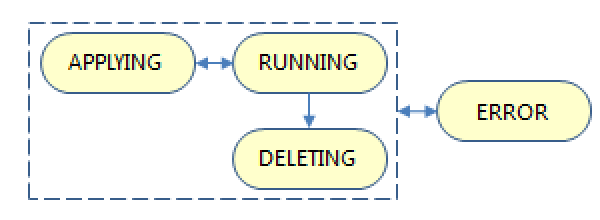
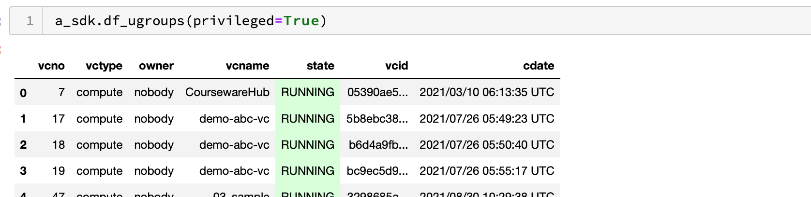
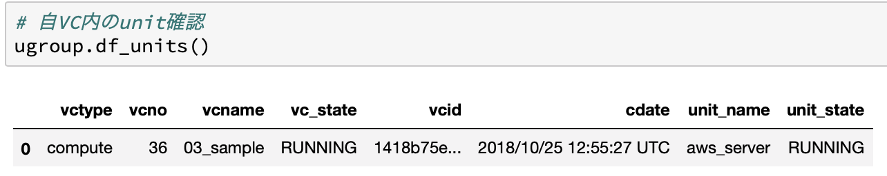
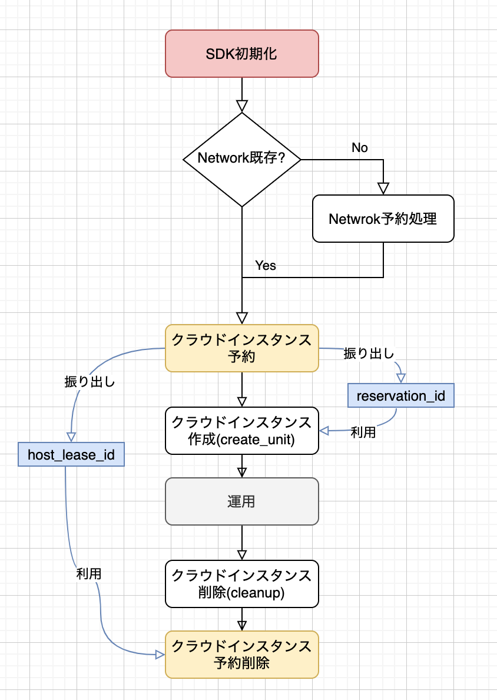

VCP SDK API仕様書
1. VCP SDK の機能仕様とシステム設計について
1.1. VCP SDK の利用環境の前提条件
Python バージョン 3.10 以上
- JupyterNotebook: NII クラウド運用チーム提供 Docker イメージ
- VCP SDK の展開先ディレクトリ: 環境変数 PYTHONPATH に設定
環境変数 PYTHONPATH のデフォルト設定: PYTHONPATH=/home/jovyan/vcpsdk
1.2. VCP による仮想システム環境の基本的な構成要素
VCP SDK が扱う仮想システム環境は、以下の構成要素を持つ。

Virtual Cloud (VC) - 複数のクラウドにまたがって構築されたひとつの仮想システム環境
UnitGroup - サーバ、クライアントなどの相互に関係をもつ異質な Node 群をグループとしてまとめて扱う単位 - 複数の Unit を1つの UnitGroup にまとめることができる
Unit - 同質（同じクラウド、同じ計算資源 (cpu, memory, ...) 、同じ用途）である Node をまとめて扱うための単位 - Unit に 属する Node をスケールアウト、スケールインすることができる
Node - UnitGroup を構成する個々のノード - パブリッククラウドの仮想マシン (Amazon EC2 インスタンス、Microsoft Azure VM など）やベアメタル・インスタンス (BM) - クラウド環境の個々の VM/BM に VCP で共通環境となるコンテナを起動する。VCPではこのコンテナを「Base コンテナ」と呼ぶ。
1.3. UnitGroup の状態定義
UnitGroup は、その管理下にある Unit と Node の状態により、以下の状態遷移を持つ。
{kind=link}

1.4. Node の状態定義
Node は、クラウド環境の VM/BM の起動状態やネットワーク接続状況により、以下の状態遷移を持つ。

1.5. VCP SDK が扱う計算資源の属性
1.5.1. provider
以下のクラウドプロバイダに対応する。
Amazon Web Services (AWS)
Microsoft Azure
北海道大学ハイパフォーマンスインタークラウド サーバサービス
VMware vSphere
さくらのクラウド
Oracle Cloud Infrastructure
Chameleon Cloud
Google Cloud Platform (GCP)
オンプレミス・サーバ (On-premises)
mdx2
Proxmox VE
1.5.2. spec
クラウド環境の VM/BM における CPU コア数、搭載メモリ量などの設定。 VCP SDK の flavor を定義して設定するか、または項目ごとに値を設定する。
クラウドプロバイダごとの項目は、 spec一覧 を参照。 指定可能な個数や条件は APIドキュメント を参照。
# flavor か取得
spec = sdk.get_spec('aws', 'small')
# カスタマイズ
spec.instance_type = 'm5.xlarge'
1.5.3. flavor
small, large など、クラウド環境の VM/BM の spec 指定を抽象化した形式で扱う設定。
利用者毎に flavor ファイル vcp_flavor.yml の内容をカスタマイズすることができる。
vcp_flavor.yml 記述例
#
# VCP SDK cloud flavor
#
#
# Amazon Web Services (AWS)
#
aws:
small:
instance_type: m4.large
volume_type: gp2
volume_size: 8
medium:
instance_type: m4.xlarge
volume_type: gp2
volume_size: 40
large:
instance_type: m4.2xlarge
volume_type: gp2
volume_size: 100
gpu:
instance_type: p2.xlarge
volume_type: gp2
volume_size: 40
aws_disk:
small:
type: standard
size: 8
medium:
type: standard
size: 32
large:
type: standard
size: 128
aws_spot:
small:
instance_type: m4.large
volume_type: standard
volume_size: 8
medium:
instance_type: m4.xlarge
volume_type: standard
volume_size: 40
large:
instance_type: m4.2xlarge
volume_type: standard
volume_size: 100
#
# VMware vSphere
#
vmware:
small:
num_cpus: 1
memory: 1024
disk_size: 40
medium:
num_cpus: 2
memory: 2048
disk_size: 40
large:
num_cpus: 8
memory: 4096
disk_size: 100
#
# Hokkaido University High Performance Intercloud Server Service
#
hokudai:
small:
flavor_name: '1core-6GB'
volume_size: 50 # minimum 50G
medium:
flavor_name: '2core-8G'
volume_size: 80
large:
flavor_name: '4core-16G'
volume_size: 100
#
# SAKURA Cloud
#
sakura:
small:
sakuracloud_disk_plan: ssd
sakuracloud_disk_size: 20
core: 1
memory: 1
medium:
sakuracloud_disk_plan: ssd
sakuracloud_disk_size: 80
core: 2
memory: 4
large:
sakuracloud_disk_plan: ssd
sakuracloud_disk_size: 200
core: 4
memory: 8
sakura_disk:
small:
sakuracloud_disk_plan: ssd
sakuracloud_disk_size: 20
medium:
sakuracloud_disk_plan: ssd
sakuracloud_disk_size: 40
large:
sakuracloud_disk_plan: ssd
sakuracloud_disk_size: 249
#
# Microsoft Azure
#
azure:
small:
vm_size: Standard_B1s
disk_size_gb: 40
managed_disk_type: Standard_LRS
medium:
vm_size: Standard_D3_v2
disk_size_gb: 100
managed_disk_type: Standard_LRS
large:
vm_size: Standard_D4_v2
disk_size_gb: 100
managed_disk_type: Premium_LRS
azure_disk:
small:
storage_account_type: Standard_LRS
disk_size_gb: 8
medium:
storage_account_type: Standard_LRS
disk_size_gb: 32
large:
storage_account_type: Standard_LRS
disk_size_gb: 128
#
# Oracle Cloud Infrastructure
#
oracle:
small:
shape: VM.Standard.E2.1
boot_volume_size_in_gbs: 50
medium:
shape: VM.Standard.E2.2
boot_volume_size_in_gbs: 100
large:
shape: VM.Standard1.1sd
boot_volume_size_in_gbs: 250
oracle_disk:
small:
size_in_gbs: 20
medium:
size_in_gbs: 40
large:
size_in_gbs: 250
#
# Google Cloud Platform
#
gcp:
small:
machine_type: f1-micro
disk_size_gb: 40
disk_type: pd-standard
medium:
machine_type: n1-standard-1
disk_size_gb: 100
disk_type: pd-ssd
large:
machine_type: n1-highcpu-2
disk_size_gb: 100
disk_type: pd-ssd
#
# Proxmox VE
#
proxmox:
small:
num_cpus: 1
memory: 2048
disk_size: 40
medium:
num_cpus: 4
memory: 4096
disk_size: 80
large:
num_cpus: 8
memory: 8192
disk_size: 120
#
# mdx2
#
mdx2:
small:
flavor_name: 'vc1m2g'
volume_size: 25
volume_type: tripleo
medium:
flavor_name: 'vc2m4g'
volume_size: 50
volume_type: tripleo
large:
flavor_name: 'vc4m8g'
volume_size: 100
volume_type: tripleo
mdx2_disk:
small:
type: tripleo
size: 25
medium:
type: tripleo
size: 50
large:
type: tripleo
size: 100
#
# On-premises
#
onpremises:
default:
flavor_name: dummy
VCP SDK VCPSDK::df_flavors() を利用して、内容を確認することができる。

1.6. VCP SDK API 利用方法
1.6.1. 起動
最もシンプルな VC ノード起動方法は、以下のような 4 ステップの Python コードで実現可能である。
AWS 上に VC ノードを起動するためのサンプルコードを示す。
from common import logsetting
from vcpsdk.vcpsdk import VcpSDK
#
# VCP SDK 初期化
#
vcc_access_token = "ユーザ毎のアクセストークン"
sdk = VcpSDK(vcc_access_token)
#
# UnitGroup 作成
#
ugroup = sdk.create_ugroup('MyUnitGroupName', 'compute')
#
# 作成する Unit の spec 情報を作成
#
spec = sdk.get_spec("aws", "small")
#
# 変更可能な spec
#
# spec.num_nodes = 1
# spec.instance_type = 'm4.large'
# spec.params_v = ['/opt:/opt']
# spec.params_e = ['USER_NAME=test']
# spec.volume_size = 40
# spec.volume_type = "standard" # standard|io1|gp2|sc1|st1
# spec.disks = ['vol-08cbb04b35c8c9545']
# VC ノードの DNS 設定 (設定ファイル vcp_config.yml で記述した値を変更可能)
# spec.dns = [ '1.1.1.1', '1.0.0.1' ] # e.g. Cloudflare
# spec.dns_opt = [ "timeout:60" ]
# spec.dns_search = "example.com"
# spec.hostname = "mynode"
# VC ノードの /etc/hosts に追加 (設定ファイル vcp_config.yml で記述した値を変更可能)
# spec.add_host = [ "myhost:192.168.1.1", "yourhost:192.168.1.200"]
# AWS EC2 インスタンスのタグ設定
# spec.set_tag('key1', 'value1')
# spec.set_tag('key2', 'value2')
# VC ノード に SSH 接続するための公開鍵を設定
spec.set_ssh_pubkey('tmp/id_rsa.pub') # tmp/id_rsa はあらかじめ作成しておく
#
# 作成した spec 情報を利用して Unit を作成（VCノード起動）
#
unit = ugroup.create_unit("new_sample_server", spec)
create_unit() による VC ノード起動に長時間を要してタイムアウトすると、その戻り値の Unit 情報 (vcpsdk::VcpUnitClass) を取得できない。 その場合でも、結果的に VC ノードの起動が完了していれば、 unit_name を指定して get_unit() を実行することにより Unit 情報を取得し、Unit に対する各種操作を継続することが可能である。
1.6.2. UnitGroup 確認
for ugroup in sdk.find_ugroup():
print(ugroup)
---
[Vc]
+ type[compute] name[03_sample] owner(user1) vcno(55) state[RUNNING] vcid[fxxxb28xxxxxxxe698e8001995b7b4a2]
...
df_ugroups() の例
{kind=link}

1.6.3. 起動した Unit, Node の確認
for node in ugroup.find_nodes():
print(node)
---
[VcNode]
+ no(1) state[RUNNING] id[13xxxxxxxxxxxxxxx2babc606cb4e60f] \
cloud_instance_address[172.30.2.242] cloud_instance_id[i-0e868711a439130d3]
...
---
[VcNode]
+ no(1) state[RUNNING] id[13xxxxxxxxxxxxxxx2babc606cb4e60f] \
pandasのDataFrame形式で出力する方法は、以下の通り。
df_units() の例
{kind=link}

df_nodes() の例
# VCコントローラー全体(所有UnitGroup内のみ)
sdk.df_nodes()
# VCコントローラー全体(特権モードで全て)
sdk.df_nodes(privileged=True)
# UnitGroup内
ugroup..df_nodes()
# Unit内
unit.df_nodes()
df_nodes() のdisk例

もし、設定などの問題で起動に失敗していた場合、Unit を削除する。
ugroup.delete_units('Unit名', force=True)
指定できる個数、条件は、APIドキュメント を参照。
1.6.4. Node 追加
起動済みの Node と同じ spec の Node を追加することができる。
e.g. Node を5個追加
unit.add_nodes(5)
1.6.5. Node 削除
起動済みの Node を条件指定により削除することができる。
e.g. 起動済みの Node のうち、1個削除
unit.delete_nodes(1)
e.g. 起動済みの Node に対応するクラウドインスタンスの「IP アドレス」を指定して削除
unit.delete_nodes(ip_address="xxx.xxx.xxx.xxx")
指定できる条件は、APIドキュメント を参照。
1.6.6. UnitGroup 初期化 (全 Unit 削除)
UnitGroup 配下の全ての Unit と Node を削除する。
ugroup = sdk.get_ugroup('UnitGroup名')
ugroup.cleanup()
1.6.7. spec のカスタマイズ
spec の各項目は、その属性値を直接設定することができる。
spec = sdk.get_spec('aws', 'small')
spec.volume_size = 80
1.6.8. UnitGroup 情報の確認
利用する VC コントローラの管理下にある UnitGroup 情報を確認する。
for ugroup in sdk.find_ugroups():
print(ugroup)
---
+ type[compute] name[03_sample] owner(user1) vcno(55) state[RUNNING] vcid[fxxxb...]
- ...
...
指定できる条件は、APIドキュメント を参照。
1.6.9. VPNカタログ情報の確認
VCで利用できるVPNカタログ情報を取得する。
print(sdk.get_vpn_catalog("aws"))
---
{'default': {'aws_availability_zone': 'ap-northeast-1a', 'aws_vpc_subnet_id': 'subnet-0a743...', 'private_network_ipmask': '172.30.2.0/24', 'aws_vpc_security_group_id': 'sg-0a56...', 'aws_region': 'ap-northeast-1'}}
引数でproviderを省略すると、全providerの情報を一括して取得できる。
# 全部
catalogs = sdk.get_vpn_catalog()
for provider in catalogs.keys():
if provider in ["onpremises"]:
continue
print("== provider {}".format(provider))
print(catalogs[provider])
---
== provider oracle
{'default': {'oracle_subnet_id': 'ocid1.subnet.oc1.ap-tokyo-1.aaxx...', 'oracle_availability_domain': 'mkro:AP-TOKYO-1-AD-1', 'private_network_ipmask': '172.24.2.0/24', 'oracle_tenancy_ocid': 'ocid1.tenancy.oc1..aa...', 'oracle_compartment_id': 'ocid1.compartment.oc1..a...', 'oracle_region': 'ap-tokyo-1'}}
== provider sakura
{'default': {'sakura_private_subnet_gateway_ip': '172.20.1.4', 'sakura_local_switch_id': '1...', 'private_network_ipmask': '172.20.1.0/24', 'sakura_zone': 'tk1a'}}
== provider aws
{'default': {'aws_availability_zone': 'ap-northeast-1a', 'aws_vpc_subnet_id': 'subnet-0a743...', 'private_network_ipmask': '172.30.2.0/24', 'aws_vpc_security_group_id': 'sg-0a56...', 'aws_region': 'ap-northeast-1'}}
== provider azure
{'default': {'private_network_ipmask': '172.21.1.0/24', 'azure_location': 'Japan East', 'azure_resource_group_name': 'niivcp', 'azure_vnet_name': 'vcc3013', 'azure_subnet_name': 'vcc3013subnet', 'azure_security_group_name': 'vcc3013-main-nsg'}}
== provider aws_spot
{'default': {'aws_availability_zone': 'ap-northeast-1a', 'aws_vpc_subnet_id': 'subnet-0a7...', 'private_network_ipmask': '172.30.2.0/24', 'aws_vpc_security_group_id': 'sg-0a5...', 'aws_region': 'ap-northeast-1'}} ...
指定できる条件は、APIドキュメント を参照。
1.6.10. 何か問題があったらバージョン情報を確認
バグ報告や質問などは、VCP SDK のバージョン情報を添えてご報告ください。
# VCP SDK バージョン確認
sdk.version()
---
vcplib:
filename: /home/jovyan/vcpsdk/vcplib/occtr.py
version: 20.08.0+20200831
vcpsdk:
filename: /home/jovyan/vcpsdk/vcpsdk/vcpsdk.py
version: 20.10.0+20201001
plugin:
aws: 1.2+20191001
aws_disk: 1.0+20190408
aws_spot: 1.1+20191001
azure: 1.2+20191001
vmware: 1.1+20191001
azure_disk: 1.0+20190408
sakura: 1.1+20191001
sakura_disk: 1.0+20190930
oracle: 1.0+20200331
oracle_disk: 1.0+20200331
aic: 1.2+20191001
abc: 1.3+20190408
hokudai: 1.1+20191001
chameleon: 1.0+20200831
chameleon_ext: 20200731
gcp: 1.0+20190408
onpremises: 1.0+20190408
vc_controller:
host: 10.0.0.1
name: vcc3060
wait_timeout_sec: 1000(default 15min)
vc_controller: 20.10.0+20201001
vc_controller_git_tag: nightly-20200511-15-g8dd969e
plugin:
sakura: 1.1+20200401
aws: 1.2+20200401
abc: 1.3+20200401
gcp: 1.0+20200401
vmware: 1.1+20200401
aws_spot: 1.1+20200401
azure: 1.2+20200401
aic: 1.2+20200401
chameleon: 1.0+20200401
hokudai: 1.1+20200401
oracle: 1.0+20200401
1.6.11. Chameleon Cloud の例
Chameleon を使用する上で他のクラウドプロバイダと異なる点は、 クラウドインスタンスを起動する前に「予約」操作が必要なことである。
物理サーバおよびネットワークの予約処理は VC 利用者自身で行う必要がある。
ネットワーク予約
{kind=link}

Chameleon Cloud 上で VC ノードを起動するためのサンプルコードを示す。
from common import logsetting
from vcpsdk.vcpsdk import VcpSDK
#
# VCP SDK 初期化
#
vcc_access_token = "ユーザ毎のアクセストークン"
sdk = VcpSDK(vcc_access_token)
# VC コントローラ環境に登録済みのクラウドネットワークセグメント情報 (VPNカタログ) を取得
vpn_catalog_name = "default"
vpn_catalog = vcpsdk.get_vpn_catalog("chameleon", catalog_name=vpn_catalog_name)
#
# ネットワーク確認
#
# Chameleon Network の予約用 Extension を生成
network_ext = sdk.get_extension("chameleon_network")
network_ext.setup(vpn_catalog)
# ネットワークの存在チェック
assert network_ext.network_exists(), "not exist sharedwan1"
#
# ホスト (物理サーバ) の予約
#
host_ext = vcpsdk.get_extension("chameleon")
# ホスト予約に必要な属性
node_type = "compute_skylake"
min_instances = 1
max_instances = 3
# 日付はUTCで指定する
start_dt = datetime.datetime.utcnow()
start_date=start_dt.strftime("%Y-%m-%d %H:%M")
end_date=(start_dt + datetime.timedelta(days=7)).strftime("%Y-%m-%d %H:%M") # 7日
host_ext.setup(
node_type,
start_date=start_date,
end_date=end_date,
min_instances=min_instances,
max_instances=max_instances,
lease_name_prefix = "S003", # lease_name の prefix
vpn_catalog=vpn_catalog,
)
# ホスト予約をリクエスト
lease_info = host_ext.reserve_host()
lease_info.wait()
# 予約IDを取得 (create_unitで必要)
reservation_id = lease_info.reservation_id
#---------------------------------------------------
#
# UnitGroupの作成
#
ugroup = sdk.create_ugroup('UnitGroup名', 'compute')
#
# 作成する Unit の spec 情報を作成
#
spec = sdk.get_spec("chameleon", "default")
spec.reservation = reservation_id # 予約済み reservation_id
#
# 変更可能な spec
#
# クラウドのマシンイメージ設定
# spec.cloud_image = 'niivcp-20170616'
# VC ノード に SSH 接続するための公開鍵を設定
spec.set_ssh_pubkey('tmp/id_rsa.pub')
# VC ノードのタグ設定は Chameleon Cloud ではサポートしない
#
# 作成した spec 情報を利用して Unit を作成（VCノード起動）
# (注意) ホスト予約の開始時刻の到来後に create_unit を呼ぶこと
#
unit_name = 'chameleon_server'
unit = ugroup.create_unit(unit_name, spec, wait_for=True, verbose=0)
1.7. VCP SDK の設定ファイル
VCP SDK を利用する VC コントローラ環境に対応したクラウドプロバイダの情報を 設定ファイル vcp_config.yml にあらかじめ記述しておく。
vcp_config.yml のデフォルトの展開先 PATH は以下のとおり。
/notebooks/notebook/vcp_config/vcp_config.yml
この PATH は VCP SDK 初期化時に config_dir='config directory' を指定することで変更可能である。
sdk = VcpSDK('アクセストークン', config_dir="./my_config")
vcp_config.yml は、 実行するnotebookの directory配下の以下の場所が有効となる。
./my_config/vcp_conig.yml
vcp_config.yml のサンプルを以下に示す。
#
# VC Controller
#
vcc:
host: VC Controller IP address
name: VC Controller Name
# 以降省略可。ネットワーク接続方式により必要な場合のみ
# DNAT情報などを管理者に問い合わせる。
# insecure_request_warning: False
# vcc_port: VCP REST API port
# vault_port: vault servivce port
# private_ip: VC Controller private IP
# VC ノードなどの起動・終了待ち時間の調整
wait_timeout_sec: 1000 # default 1000sec = 15minutes
# spec_options:
# # http://docs.docker.jp/engine/userguide/networking/default_network/donfigure-dns.html
# dns:
# - 8.8.8.8
# dns_search: example.com
# add_host:
# - "my_grafana:10.0.0.1"
# - "my_gw:172.30.1.10"
# - "my_manager:10.0.0.200"
# options:
# - timeout:60
# hostname: mynode
#
# Amazon Web Services (AWS)
#
aws:
access_key: "アクセスキーID"
secret_key: "シークレットアクセスキー"
private_network: "default"
#
# VMware vSphere
#
vmware:
user: "ユーザ名"
password: "パスワード"
private_network: "default"
#
# Hokkaido University High Performance Intercloud Server Service
#
hokudai:
user_name: "ユーザ名"
password: "パスワード"
private_network: "default"
#
# SAKURA Cloud
#
sakura:
sakura_token: "APIキーのアクセストークン"
sakura_secret: "APIキーのアクセストークンシークレット"
sakura_private_network: "default"
#
# Oracle Cloud Infrastructure
#
oracle:
user_ocid: "ユーザーのOCID"
fingerprint: "公開キーのフィンガープリント"
private_key: "秘密鍵"
private_network: "default"
#
# Microsoft Azure
#
azure:
subscription_id: "サブスクリプションID"
client_id: "クライアントID"
client_secret: "クライアントシークレット"
tenant_id: "テナントID"
private_network: "default"
#
# Chameleon Cloud
#
chameleon:
application_credential_id: "application_credential_id"
application_credential_secret: "application_credential_secret"
private_network: "default"
#
# Google Cloud Platform
#
gcp:
credentials: "クレデンシャル情報 (JSON文字列をBase64エンコードして1行で表現した値)"
private_network: "default"
#
# Proxmox VE の設定
#
proxmox:
token_id: "トークンID"
token_secret: "トークンシークレット"
private_network: "default"
#
# mdx2 の設定
#
mdx2:
user_name: "ユーザ名"
password: "パスワード"
private_network: "default"
1.7.1. JupyterNotebookからVCコントローラに直接接続できないネットワーク構成の場合対応
例えば、下図のようにJupyterNotebookがサービスネットワーク外で、DNAT経由でVCコントローラにアクセスする場合は、 以下の項目を設定して対応できる。

insecure_request_warning: VCコントローラアクセス時のSSL証明書のエラー対応(True: エラー回避)
vcc_port: VCP REST API port番号(default 443)
vault_port: vault servivce port番号(default 8443)
private_ip: VcNodeからVC コントローラにアクセスするための、VC コントローラのIP(default vcc: host)
1.7.2. VcNode DNS の設定
VcNode上のbase container の DNS を spec で設定できる
例えば、以下のように dns (DNS server IP)、 hostname を設定する。
spec.dns = "1.1.1.1"
spec.hostname = "server01"
VcNode の base container を起動するdocker command は、以下のようになる。
docker run --hostname server01 --dns=1.1.1.1 ...
DNSの設定項目
dns
dns_search
add_host
options
hostname
docker の DNS option についての詳細は、以下のdocker公式ドキュメントを参照
http://docs.docker.jp/engine/userguide/networking/default_network/donfigure-dns.html
1.8. 特権モード機能
バージョン21.11 でVC コントローラに機能追加された、特権モード(privileged)機能を利用するために、 Superuser トークン所有者は、VCP SDK の各APIに引数 privileged=True をつけて特権モードを行使できる。
通常のモードでは、ユーザが所有している UnitGroup のみ、参照、操作することができる。 特権モードでは、ユーザが所有していない UnitGroup も、参照、操作することができる。
また、特権モードを行使できるのは、VC コントローラにアクセスするためのアクセスキーが、super ユーザとして登録されている場合のみである。 regular ユーザが、特権モードを行使しようとすると、権限エラーとなる。
例) 特権モードの指定方法
# 通常モード
ugroup.df_nodes()
# または、
ugroup.df_nodes(privileged=False)
# 特権モード
ugroup.df_nodes(privileged=True)
1.9. spec 一覧
1.9.1. provider 共通の spec
provider 共通の spec 項目は、以下の通り。
# 起動する VC ノードの個数
spec.num_nodes = 1
# Base コンテナ起動時の VOLUME (-v, --volume) パラメータ
spec.params_v = ['/opt:/opt']
# Base コンテナ起動時の環境変数 ENV (-e) パラメータ
spec.params_e = ['USER_NAME=test']
# 仮想マシンイメージ名（`onpremises`(=既存サーバモード)の場合は指定不可）
spec.cloud_image = 'vmtemplate01'
# VC ノードに SSH 接続するための公開鍵ファイル
spec.set_ssh_pubkey('tmp/id_rsa.pub')
Fixed IP |
静的なIPアドレスを割り当ててVCノードを起動する機能 |
Fixed MAC |
静的なMACアドレスを割り当ててVCノードを起動する機能 |
Attach volume |
クラウド上の既存のボリュームをクラウドインスタンスにアタッチする機能 |
Tag |
クラウドインスタンスやディスクに対するタグ設定機能 |
Disk API |
クラウドのディスクを作成、削除するAPI |
Power API |
VCノードに対応するクラウドインスタンスのPower on/offを行うAPI |
Provider |
Fixed IP |
Fixed MAC |
Attach volume |
Tag |
Disk API |
Power API |
|---|---|---|---|---|---|---|
o |
x |
o |
o |
o |
o |
|
o |
x |
o |
o |
o |
o |
|
o |
x |
o |
x |
o |
x |
|
o |
x |
o |
x |
o |
o |
|
o |
x |
o |
o |
o |
o |
|
o |
o |
x |
x |
x |
x |
|
x |
x |
x |
x |
x |
x |
|
o |
x |
x |
x |
x |
x |
|
o |
x |
x |
x |
x |
x |
|
o |
x |
x |
x |
x |
x |
|
o |
x |
o |
o [1] |
o |
o |
|
o |
o |
x |
o [1] |
x |
o |
2. VCP SDK
2.1. SDKベースクラス(vcpsdk/vcpsdk)
- class VcpExtClass(config_dir, vcc_access_token)
VCP 各Cloud毎のExt 情報管理用
- find_extension(provider_name)
プロバイダ名からextension情報を生成
- パラメータ:
provider_name -- real cloud provider名
- 戻り値:
VcpExtResource Object
- class VcpSDK(vcc_access_token='', config_dir='', verbose=0)
VCP SDKベースクラス
サンプルコード
# 初期化(confi_dir省略時は、 `/notebooks/notebook/vcp_config` ) sdk = VcpSDK('アクセストークン', config_dir="vcp_config.yml, vcp_flavor.yml のdirectory") # バージョン情報 sdk.version() # フレーバー情報 sdk.df_flavors('プロバイダ名') # vaultやdocker registory のurl情報 sdk.vcc_info() # spec作成 spec = sdk.get_spec('プロバイダ名', 'flavor名') # UnitGroup情報出力 sdk.df_ugroups() # UnitGroup情報取得 ugroups = sdk.find_ugroups() ugroup = sdk.get_ugroup('UnitGroup名') # 既存サーバ用 ssh 公開鍵取得 sdk.get_publickey() # UnitGroupの作成 ugroup = sdk.create_ugroup('UnitGroup名', 'compute|storage')
- authority()
authority 情報の取得
結果サンプル
{ 'role': 'fullaccess', 'user_name': 'nobody', 'user_role': 'regular' }- 戻り値:
authority情報
- property config_dir
config ファイルのディレクトリ
- create_ugroup(ugroup_name, ugroup_type='compute', privileged=False)
UnitGroupの作成
- パラメータ:
ugroup_name -- vc名
ugroup_type -- vcタイプ compute|storage
privileged -- 特権モードを指定する場合は True、指定しない場合は False (デフォルト)
- 戻り値:
UnitGroup情報(vcpsdk::VcpUnitGroupClass)
- df_flavors(provider_name)
flavor定義の一覧(DataFrame形式)
- パラメータ:
provider_name -- 表示対象とするプロバイダ名
- df_nodes(privileged=False)
All node一覧(DataFrame形式)
- パラメータ:
privileged -- 特権モードを指定する場合は True、指定しない場合は False (デフォルト)
- df_ugroups(privileged=False)
UnitGroup 一覧(DataFrame)
- パラメータ:
privileged -- 特権モードを指定する場合は True、指定しない場合は False (デフォルト)
- find_ugroups(ugroup_name='', vcid='', vcno='', state=None, ugroup_type='', privileged=False)
検索条件にマッチするVC検索
- パラメータ:
ugroup_name -- 検索条件Vc名
vcid -- 検索条件vcid
vcno -- 検索条件vcno
ugroup_type -- 検索条件UnitGroupタイプ
privileged -- 特権モードを指定する場合は True、指定しない場合は False (デフォルト)
- 戻り値:
UnitGroup情報(vcpsdk::VcpUnitGroupClass)
注釈
検索条件指定が複数あれば、AND条件とする
- get_extension(provider_name)
extension(plugin拡張項目)情報の取得
- パラメータ:
provider_name -- プロバイダ名
- 戻り値:
extensionのリソース情報(vcpsdk::VcpExtResource)
- get_publickey()
既存サーバ用 ssh 公開鍵取得
- 戻り値:
ssh 公開鍵文字列
- get_spec(provider_name, flavor)
Spec情報の取得
- パラメータ:
provider_name -- プロバイダ名
flavor -- small, medium, large などのfalvor文字列
- 戻り値:
SPECのリソース情報(vcpsdk::VcpSpecResource)
- get_ugroup(ugroup_name, privileged=False)
unit group名を指定して、UnitGroup取得
- パラメータ:
ugroup_name -- vc名
privileged -- 特権モードを指定する場合は True、指定しない場合は False (デフォルト)
- 戻り値:
UnitGroup情報(vcpsdk::VcpUnitGroupClass)
- get_vpn_catalog(provider=None, vpn_catalog_name='default')
VC Controller からVPNカタログ情報を取得する
- パラメータ:
provider -- プロバイダ名
vpn_catalog_name -- VPNカタログ名
- 戻り値:
vpnカタログ情報
- vcc_info()
VC Controllerに関する情報の取得
- return:
VCCに関する情報
結果サンプル
{ { "host": "10.0.0.1:443" }, { "vault_url": "https://10.0.0.1:8443" }, { "docker_registry": { "official": "10.0.0.1:5000", "user": "10.0.0.1:5001" } }
- property verbose
VCP Lib:verbose
- version()
VCP Libのバージョン出力
- version_dict() dict
VCP Libのバージョン出力(dict)
- class VcpSpecClass(config_dir)
VCP 各Cloud毎のResource(spec) 情報管理用
- find_spec(provider_name, flavor)
プロバイダ名と、flavorからspec情報を生成
- パラメータ:
provider_name -- real cloud provider名
flavor -- フレーバー名(ex small, medium, large)
- 戻り値:
スペックリソースobject
- class VcpUnitClass(ugroup, unit)
VcpUnitクラス(VCP Lib::VcUnit & VCP Lib::VcNode相当)
サンプルコード
... ugroup = sdk.create_ugroup('UnitGroup名', 'compute|storage') unit = ugroup.create_unit('Unit名', spec) # Unit内のnodeをpower off unit.power_off_nodes() # Unit内のnodeをpower on unit.power_on_nodes() # Node追加 unit.add_nodes(ノード数) # Node削除 unit.delete_nodes(ノード数) # Node情報出力 unit.df_nodes() # Node情報取得 ips = unit.find_ip_adresses() nodes = unit.find_nodes()
- add_nodes(num_add_nodes=1, ip_addresses=[], ip_address=None, mac_addresses=[], mac_address=None, wait_for=True, verbose=0, privileged=False)
Nodeの追加
- パラメータ:
num_add_nodes -- 追加起動Node数
ip_addresses -- 追加起動するNodeのIPアドレス(配列)
ip_address -- 追加起動するNodeのIPアドレス
mac_addresses -- 追加起動するNodeのMACアドレス(配列)
mac_address -- 追加起動するNodeのMACアドレス
wait_for -- nodeの起動待ち条件(True: 待つ)
verbose -- verbose=0 でverboseなし
privileged -- 特権モードを指定する場合は True、指定しない場合は False (デフォルト)
- 戻り値:
node情報(vcplib::VcNode配列)
注釈
ip_address と ip_addresses を両方指定すると和集合として扱う
ip_address と ip_addresses を storageタイプのunitに指定するとエラーとする
ip_addresses, ip_address のいずれかを指定した場合、num_add_nodes を無視する
- delete_nodes(num_delete_nodes=None, node_no=None, cloud_instance_id=None, ip_addresses=None, ip_address=None, wait_for=True, verbose=0, privileged=False)
検索条件にマッチするNode削除
- パラメータ:
num_delete_nodes -- 削除対象Node最大数
node_no -- 検索条件node_no
cloud_instance_id -- 検索条件cloud_instance_id
ip_addresses -- 検索条件cloud_instance_address(配列)
ip_address -- 検索条件cloud_instance_address
wait_for -- nodeの削除待ち条件(True: 待つ)
verbose -- verbose=0 でverboseなし
privileged -- 特権モードを指定する場合は True、指定しない場合は False (デフォルト)
- 戻り値:
node情報(vcplib::VcNode配列)
注釈
検索条件は、最大1個のみ指定可能
検索条件未指定の場合は、num_delete_nodes=1 のみ指定と同様
wait_for=False の場合、複数nodeの削除はできない。(node削除は1個ずつ)
- df_nodes(privileged=False)
node一覧(DataFrame形式)
- パラメータ:
privileged -- 特権モードを指定する場合は True、指定しない場合は False (デフォルト)
- find_nodes(node_id='', node_state='', node_no='', ip_addresses=[], ip_address=None, cloud_instance_id=None, mapper=None, privileged=False)
検索条件にマッチするnode検索
- パラメータ:
node_id -- 検索条件node_id
node_state -- 検索条件node_state
node_no -- 検索条件node_no
ip_addresses -- 検索条件cloud_instance_addresses
ip_address -- 検索条件cloud_instance_address
cloud_instance_id -- 検索条件cloud_instance_id
mapper -- 検索結果のnodeに適用する関数
privileged -- 特権モードを指定する場合は True、指定しない場合は False (デフォルト)
- 戻り値:
node情報(vcplib::VcNode配列)
注釈
ip_address と ip_addresses を両方指定すると和集合として扱う
検索条件指定が複数あれば、AND条件とする
複数nodeの場合、node_no の昇順にsortした結果を返す
- property name
VCP Lib::VcUnit の name
- power_off_nodes(num_power_off_nodes=None, node_no=None, cloud_instance_id=None, ip_addresses=None, ip_address=None, wait_for=True, privileged=False, verbose=0)
検索条件にマッチするNodeのInstanceのpower off
- パラメータ:
num_power_off_nodes -- power off対象Node最大数
node_no -- 検索条件node_no
cloud_instance_id -- 検索条件cloud_instance_id
ip_addresses -- 検索条件cloud_instance_address(配列)
ip_address -- 検索条件cloud_instance_address
wait_for -- nodeの監視開始待ち条件(True: 待つ)
privileged -- 特権モードを指定する場合は True、指定しない場合は False (デフォルト)
verbose -- verbose=0 でverboseなし
- 戻り値:
node情報(vcplib::VcNode配列)
注釈
検索条件は、最大1個のみ指定可能
検索条件未指定の場合は、num_power_off_nodes=1 のみ指定と同様
wait_for=False の場合、複数nodeのpower offはできない。(node power offは1個ずつ)
- power_on_nodes(num_power_on_nodes=None, node_no=None, cloud_instance_id=None, ip_addresses=None, ip_address=None, wait_for=True, privileged=False, verbose=0)
検索条件にマッチするNodeのInstanceのpower on
- パラメータ:
num_power_on_nodes -- power on対象Node最大数
node_no -- 検索条件node_no
cloud_instance_id -- 検索条件cloud_instance_id
ip_addresses -- 検索条件cloud_instance_address(配列)
ip_address -- 検索条件cloud_instance_address
wait_for -- nodeの監視開始待ち条件(True: 待つ)
privileged -- 特権モードを指定する場合は True、指定しない場合は False (デフォルト)
verbose -- verbose=0 でverboseなし
- 戻り値:
node情報(vcplib::VcNode配列)
注釈
検索条件は、最大1個のみ指定可能
検索条件未指定の場合は、num_power_on_nodes=1 のみ指定と同様
wait_for=False の場合、複数nodeのpower onはできない。(node power onは1個ずつ)
- property state
VCP Lib::VcUnit の state
- unwatch()
Unit監視停止
注釈
power_off_nodes() の利用を推奨
- unwatch_nodes(num_watch_nodes=None, node_no=None, cloud_instance_id=None, ip_addresses=None, ip_address=None, privileged=False, verbose=0)
検索条件にマッチするNodeの監視停止
- パラメータ:
num_watch_nodes -- unwatch対象Node最大数
node_no -- 検索条件node_no
cloud_instance_id -- 検索条件cloud_instance_id
ip_addresses -- 検索条件cloud_instance_address(配列)
ip_address -- 検索条件cloud_instance_address
privileged -- 特権モードを指定する場合は True、指定しない場合は False (デフォルト)
verbose -- verbose=0 でverboseなし
- 戻り値:
node情報(vcplib::VcNode配列)
注釈
power_on_nodes の利用を推奨
- watch(wait_for=True)
Unit監視開始
- パラメータ:
wait_for -- nodeの削除待ち条件(True: 待つ)
注釈
power_on_nodes() の利用を推奨
- watch_nodes(num_watch_nodes=None, node_no=None, cloud_instance_id=None, ip_addresses=None, ip_address=None, wait_for=True, privileged=False, verbose=0)
検索条件にマッチするNodeの監視開始
- パラメータ:
num_watch_nodes -- watch対象Node最大数
node_no -- 検索条件node_no
cloud_instance_id -- 検索条件cloud_instance_id
ip_addresses -- 検索条件cloud_instance_address(配列)
ip_address -- 検索条件cloud_instance_address
wait_for -- nodeの監視開始待ち条件(True: 待つ)
privileged -- 特権モードを指定する場合は True、指定しない場合は False (デフォルト)
verbose -- verbose=0 でverboseなし
- 戻り値:
node情報(vcplib::VcNode配列)
注釈
power_off_nodes の利用を推奨
- class VcpUnitGroupClass(vc=None, vcp_config='')
VcpUnitGroupClassクラス(VCLIB::Vc相当) サンプルコード
# 初期化 sdk = VcpSDK('アクセストークン', config_dir="vcp_config.yml, vcp_flavor.yml のdirectory") spec = sdk.get_spec('プロバイダ名', 'flavor名') # UnitGroup作成 ugroup = sdk.create_ugroup('UnitGroup名', 'compute|storage') # Unit作成 unit = ugroup.create_unit('Unit名', spec) # Unit削除 ugroup.delete_units('Unit名') # 各種情報出力 ugroup.df_units() ugroup.df_nodes() # 各種情報取得 ips = ugroup.find_ip_address() units = ugroup.find_units() unit = ugroup.get_unit('Unit名') nodes = ugroup.find_nodes() # UnitGroup削除 ugroup.cleanup() # UnitGroupの所有者変更 ugroup.change_owner("new_owner")
- change_owner(new_owner, privileged=False)
VCの所有者変更
- パラメータ:
new_owner -- 新しい所有者
- cleanup(wait_for=True, privileged=False)
VC初期化(Vc配下の全てのUnitとNodeを削除)
- パラメータ:
privileged -- 特権モードを指定する場合は True、指定しない場合は False (デフォルト)
wait_for -- nodeの削除待ち条件(True: 待つ)
- create_unit(unit_name, spec, wait_for=True, privileged=False, verbose=-1)
Unit作成
- パラメータ:
unit_name -- 起動Unit名
spec -- 起動spec情報
wait_for -- nodeの起動待ち条件(True: 待つ)
privileged -- 特権モードを指定する場合は True、指定しない場合は False (デフォルト)
verbose -- verbose=0 でverboseなし
- 戻り値:
Unit情報(vcpsdk::VcpUnit)
- delete_units(unit_name, wait_for=True, force=False, privileged=False, verbose=0)
検索条件にマッチするUnit削除
- パラメータ:
name -- 検索条件Unit名
wait_for -- nodeの削除待ち条件(True: 待つ)
force -- force=Trueで、配下にnodeが存在してもnode毎削除する
privileged -- 特権モードを指定する場合は True、指定しない場合は False (デフォルト)
verbose -- verbose=0 でverboseなし
- df_nodes(privileged=False)
node一覧(DataFrame形式)
- パラメータ:
privileged -- 特権モードを指定する場合は True、指定しない場合は False (デフォルト)
- df_units(privileged=False)
unit一覧(DataFrame形式) :param privileged: 特権モードを指定する場合は True、指定しない場合は False (デフォルト)
- find_nodes(unit_name='', node_id='', node_state='', node_no='', ip_addresses=[], ip_address=None, cloud_instance_id=None, mapper=None, privileged=False)
検索条件にマッチするnode検索
- パラメータ:
unit_name -- 検索条件unit名
node_id -- 検索条件node_id
node_state -- 検索条件node_state
node_no -- 検索条件node_no
ip_addresses -- 検索条件cloud_instance_addresses(配列)
ip_address -- 検索条件cloud_instance_address
cloud_instance_id -- 検索条件cloud_instance_id
mapper -- 検索結果のnodeに適用する関数
privileged -- 特権モードを指定する場合は True、指定しない場合は False (デフォルト)
- 戻り値:
node情報(vcplib::VcNode配列)
注釈
ip_address と ip_addresses を両方指定すると和集合として扱う
検索条件指定が複数あれば、AND条件とする
- find_units(unit_name='', privileged=False)
検索条件にマッチするunit検索
- パラメータ:
unit_name -- 検索条件Unit名
privileged -- 特権モードを指定する場合は True、指定しない場合は False (デフォルト)
- 戻り値:
VcpUnit情報
注釈
検索条件指定がない場合、UnitGroup内の全てのUnitを返す
- get_unit(unit_name, privileged=False)
unit名を指定してunit取得
- パラメータ:
unit_name -- ユニット名
privileged -- 特権モードを指定する場合は True、指定しない場合は False (デフォルト)
- 戻り値:
Unit情報(vcpsdk::VcpUnitClass)
- property name
Unit groupの名前を取得する
- property owner
vcplib::Vcの owner
- property state
vcplib::Vcの state
- update_ugroup_name(ugroup_name, ugroup_type='compute', privileged=False)
UnitGroup名を設定
- パラメータ:
ugroup_name -- unitGroup名
ugroup_type -- compute | storage
privileged -- 特権モードを指定する場合は True、指定しない場合は False (デフォルト)
2.2. SDK plugins for AWS (vcpsdk/plugins/aws)
- class VcpSpecResourceAws(provider_name, flavor, config_dir)
サンプルコード
spec = sdk.get_spec("aws", "small") # # 変更できること # # spec.num_nodes = 1 # spec.params_v = ['/opt:/opt'] # spec.params_e = ['USER_NAME=test'] # spec.ip_addresses = ['起動するnodeの静的なIPアドレス'] # aws依存パラメータ # https://www.terraform.io/docs/providers/aws/index.html # spec.instance_type = 'm4.large' # spec.volume_size = 40 # spec.volume_type = "standard" # standard|io1|gp2|sc1|st1 # 追加で使用するVolume # spec.disks = ['vol-08cbb04b35c8c9545'] # volume_id 指定 # or # my_disks = disk_unit.find_nodes() # spec.disks = [my_disks[0]] # VC disk指定 # cloud上のタグ設定 # spec.set_tag('key1', 'value1') # spec.set_tag('key2', 'value2') # cloud上のAMIイメージ設定 # spec.cloud_image = 'niivcp-20170616' # base containerにssh loginするためのssh公開鍵情報を設定 spec.set_ssh_pubkey('tmp/id_rsa.pub')
- cci(name)
CCI生成
- パラメータ:
name -- unit名
- 戻り値:
CCI文字列
- property cloud_image
AWSに依存するAMIのイメージ名
- property disks
AWSに依存するEBS volume id
- property instance_type
AWSに依存するinstance_type
注釈
VCP SDK flavorで設定可能
- property ip_addresses
AWSのVPC上の静的ip_address_list
- property num_nodes
起動するnode数
- version = '1.2+20191001'
- property volume_size
AWSに依存するvolume_size (単位:GB)
注釈
VCP SDK flavorで設定可能
- property volume_type
AWSに依存するvolume_type
注釈
VCP SDK flavorで設定可能
2.3. SDK plugins for Azure (vcpsdk/plugins/azure)
- class VcpSpecResourceAzure(provider_name, flavor, config_dir)
サンプルコード
spec = sdk.get_spec("azure", "small") # # 変更できること # # spec.num_nodes = 1 # spec.params_v = ['/opt:/opt'] # spec.params_e = ['USER_NAME=test'] # spec.ip_addresses = ['起動するnodeの静的なIPアドレス'] # Azure 依存パラメータ # https://www.terraform.io/docs/providers/azurerm/index.html # spec.vm_size = 'Standard_LRS' # Standard_LRS|Premium_LRS ... # spec.disk_size_gb = 40 # spec.managed_disk_type = "standard" # standard|io1|gp2|sc1|st1 # 追加で使用するVolume # spec.disks = ['azure-volume-abc'] # or # my_disks = disk_unit.find_nodes() # spec.disks = [my_disks[0]] # VC disk指定 # cloud上のイメージ設定 # spec.cloud_image = 'niivcp-20170616' # cloud上のタグ設定 spec.set_tag('key1', 'value1') spec.set_tag('key2', 'value2') # base containerにssh loginするためのssh公開鍵情報を設定 spec.set_ssh_pubkey('tmp/id_rsa.pub')
- cci(name)
CCI生成
- パラメータ:
name -- unit名
- 戻り値:
CCI文字列
- property cloud_image
Azureに依存する cloud_image
- property disk_size_gb
Azureに依存する disk_size_gb (単位:GB)
注釈
VCP SDK flavorで設定可能
- property disks
Azureに依存する ext_managed_disk
- property ip_addresses
- property managed_disk_type
Azureに依存する managed_disk_type
注釈
VCP SDK flavorで設定可能
- property num_nodes
起動するnode数
- version = '1.2+20191001'
- property vm_size
Azureに依存する vm_size
注釈
VCP SDK flavorで設定可能
2.4. SDK plugins for Sakura (vcpsdk/plugins/sakura)
- class VcpSpecResourceSakura(provider_name, flavor, config_dir)
サンプルコード
spec = sdk.get_spec("sakura", "small") # # 変更できること # # spec.num_nodes = 1 # spec.params_v = ['/opt:/opt'] # spec.params_e = ['USER_NAME=test'] # spec.ip_addresses = ['起動するnodeの静的なIPアドレス'] # さくらのクラウド依存 # https://sacloud.github.io/terraform-provider-sakuracloud/ # spec.num_cores = 1 # spec.memory = 100 # spec.image = "vcp/base:1.1" # spec.sakuracloud_disk_plan = 'ssd' # or 'hdd' # spec.sakuracloud_disk_size = 100 # cloud上のVMイメージ設定 # spec.cloud_image = 'niivcp-20170616' # base containerにssh loginするためのssh公開鍵情報を設定 spec.set_ssh_pubkey('tmp/id_rsa.pub')
- cci(name)
CCI生成
- パラメータ:
name -- unit名
- 戻り値:
CCI文字列
- property cloud_image
Sakuraのクラウドに依存するcloud_image
- property disks
Sakuraに依存するdisk id
- property ip_addresses
SakuraのVPC上の静的ip_address_list
- property memory
Sakuraのクラウドに依存する memory
注釈
VCP SDK flavorで設定可能
- property num_cores
Sakuraのクラウドに依存する num_cores
注釈
VCP SDK flavorで設定可能
- property sakuracloud_disk_plan
Sakuraのクラウドに依存する sakuracloud_disk_plan
注釈
VCP SDK flavorで設定可能
- property sakuracloud_disk_size
Sakuraのクラウドに依存する sakuracloud_disk_size (単位:GB)
注釈
VCP SDK flavorで設定可能
- version = '1.1+20191001'
2.5. SDK plugins for AIC(vcpsdk/plugins/aic)
- class VcpSpecResourceAic(provider_name, flavor, config_dir)
サンプルコード
spec = sdk.get_spec("aic", "default") # # 変更できること # # spec.num_nodes = 1 # spec.flavor_name = 'cn000' # AIC/ABCの環境依存 # cloud上のVMイメージ設定 # spec.cloud_image = 'niivcp-20170616' # base containerにssh loginするためのssh公開鍵情報を設定 spec.set_ssh_pubkey('tmp/id_rsa.pub')
- cci(name)
CCI生成
- パラメータ:
name -- unit名
- 戻り値:
CCI文字列
- property cloud_image
AICに依存するcloud_image
- property flavor_name
AICに依存するフレーバー名
注釈
VCP SDK flavorで設定可能
- property ip_addresses
- property num_nodes
起動するnode数
- version = '1.2+20191001'
2.6. SDK plugins for ABC (vcpsdk/plugins/abc)
- class VcpSpecResourceAbc(provider_name, flavor, config_dir)
サンプルコード
spec = sdk.get_spec("abc", "default") # # 変更できること # # spec.num_nodes = 1 # spec.flavor_name = 'cn000' # AIC/ABCの環境依存 # cloud上のVMイメージ設定 # spec.cloud_image = 'niivcp-20170616' # base containerにssh loginするためのssh公開鍵情報を設定 spec.set_ssh_pubkey('tmp/id_rsa.pub')
- cci(name)
CCI生成
- パラメータ:
name -- unit名
- 戻り値:
CCI文字列
- property cloud_image
ABCに依存するcloud_image
- property flavor_name
AICに依存するフレーバー名
注釈
VCP SDK flavorで設定可能
- property ip_addresses
- property num_nodes
起動するnode数
- version = '1.3+20190408'
2.7. SDK plugins for GCP (vcpsdk/plugins/gcp)
- class VcpSpecResourceGcp(provider_name, flavor, config_dir)
サンプルコード
spec = sdk.get_spec("gcp", "small") # # 変更できること # # spec.num_nodes = 1 # spec.params_v = ['/opt:/opt'] # spec.params_e = ['USER_NAME=test'] # spec.ip_addresses = ['起動するnodeの静的なIPアドレス'] # Google Cloud Platform 依存 # https://www.terraform.io/docs/providers/google/index.html # spec.machine_type = 'n1-standard-1' # f1-micro|n1-standard-1|... # spec.disk_size_gb = 40 # spec.disk_type = "pd-standard" # pd-standard|pd-sd|... # 追加で使用するVolume # spec.disks = ['vol-08cbb04b35c8c9545'] # cloud上のGCPイメージ設定 # spec.cloud_image = 'niivcp-20170616' # base containerにssh loginするためのssh公開鍵情報を設定 spec.set_ssh_pubkey('tmp/id_rsa.pub')
- cci(name)
CCI生成
- パラメータ:
name -- unit名
- 戻り値:
CCI文字列
- property cloud_image
GCPに依存するcloud_image
- property disk_size_gb
GCPに依存するdisk_size_gb (単位:GB)
注釈
VCP SDK flavorで設定可能
- property disk_type
GCPに依存するdisk_type
注釈
VCP SDK flavorで設定可能
- property disks
GCPに依存するdisk
- property ip_addresses
GCPのVPC上の静的ip_address_list
- property machine_type
GCPに依存するmachine_type
注釈
VCP SDK flavorで設定可能
- property num_nodes
起動するnode数
- version = '1.0+20190408'
2.8. SDK plugins for Onpremises (vcpsdk/plugins/onpremises)
- class VcpSpecResourceOnpremises(provider_name, flavor, config_dir)
サンプルコード
spec = sdk.get_spec("onpremises", "default") # # 変更できること # spec.network_if = 'eth9' spec.user_name = 'ubuntu' # ssh login user spec.ip_addresses = ['起動するnodeの静的なIPアドレス'] # base containerにssh loginするためのssh公開鍵情報を設定 spec.set_ssh_pubkey('tmp/id_rsa.pub')
- cci(name)
CCI生成
- パラメータ:
name -- unit名
- 戻り値:
CCI文字列
- property ip_addresses
onpremisesに依存する ip_address_list
- property network_if
onpremisesに依存する network_if
- property user_name
onpremisesに依存する ssh login名
- version = '1.0+20190408'
2.9. SDK plugins for AWS Disk (vcpsdk/plugins/aws_disk)
- class VcpSpecResourceAwsDisk(provider_name, flavor, config_dir)
サンプルコード
spec = sdk.get_spec("aws_disk", "small") # # 変更できること # # aws 依存パラメータ # https://www.terraform.io/docs/providers/aws/index.html # spec.cloud_image = 'AMI-XXXXXX' # spec.num_disks = 1 # spec.type = "standard" # standard|io1|gp2|sc1|st1 # spec.size = 40 # cloud上のタグ設定 # spec.set_tag('key1', 'value1') # spec.set_tag('key2', 'value2') # cloud上のsnapshot名 # spec.cloud_image = 'niivcp-20170616'
- cci(name)
CCI生成
- パラメータ:
name -- unit名
- 戻り値:
CCI文字列
- property cloud_image
AWSに依存するAMIのイメージ名
- property size
AWSに依存するdisk size (単位:GB)
注釈
VCP SDK flavorで設定可能
- property type
AWSに依存するdisk type
注釈
VCP SDK flavorで設定可能
- version = '1.0+20190408'
2.10. SDK plugins for Azure Disk (vcpsdk/plugins/azure_disk)
- class VcpSpecResourceAzureDisk(provider_name, flavor, config_dir)
サンプルコード
spec = sdk.get_spec("azure_disk", "small") # # 変更できること # # spec.num_disks = 1 # Azure 依存パラメータ # https://www.terraform.io/docs/providers/azurerm/index.html # spec.storage_account_type = "Standard_LRS" # spec.disk_size_gb = 40 # cloud上のAzureイメージ名 # spec.cloud_image= 'niivcp-xxxx' # cloud上のタグ設定 # spec.set_tag('key1', 'value1') # spec.set_tag('key2', 'value2')
- cci(name)
CCI生成
- パラメータ:
name -- unit名
- 戻り値:
CCI文字列
- property cloud_image
Azureに依存する cloud_image
- property disk_size_gb
Azureに依存するsize (単位:GB)
注釈
VCP SDK flavorで設定可能
- property storage_account_type
Azureに依存するdisk type
注釈
VCP SDK flavorで設定可能
- version = '1.0+20190408'
2.11. SDK plugins for Sakura Disk (vcpsdk/plugins/sakura_disk)
- class VcpSpecResourceSakuraDisk(provider_name, flavor, config_dir)
サンプルコード
spec = sdk.get_spec("sakura_disk", "small") # # 変更できること # # spec.num_disks = 1 # さくらのクラウド依存 # https://sacloud.github.io/terraform-provider-sakuracloud/ # spec.cloud_image = 'archive-001' # spec.sakuracloud_disk_plan = "ssd" # ssd/hdd # spec.sakuracloud_disk_size = 40 # 20GB,40GB,100GB,250GB,500GB,1TB
- cci(name)
CCI生成
- パラメータ:
name -- unit名
- 戻り値:
CCI文字列
- property cloud_image
Sakuraに依存するアーカイブのイメージ名
- property sakuracloud_disk_plan
Sakuraに依存するdisk type
注釈
VCP SDK flavorで設定可能
- property sakuracloud_disk_size
Sakuraに依存するdisk size
注釈
VCP SDK flavorで設定可能
- version = '1.0+20190930'
2.12. SDK plugins for AWS Spot Instance (vcpsdk/plugins/aws_spot)
- class VcpSpecResourceAwsSpot(provider_name, flavor, config_dir)
サンプルコード
spec = sdk.get_spec("aws_spot", "small") # # 変更できること # # spec.num_nodes = 1 # spec.params_v = ['/opt:/opt'] # spec.params_e = ['USER_NAME=test'] # spec.ip_addresses = ['起動するnodeの静的なIPアドレス'] # aws 依存パラメータ # https://www.terraform.io/docs/providers/aws/index.html # spec.instance_type = 'm4.large' # spec.volume_size = 40 # spec.volume_type = "standard" # standard|io1|gp2|sc1|st1 # spot instace専用 # spec.spot_type = 'one-time' # one-time: spotがなくなったらVcNode終了 # persistent: spotがなくなったらVcNode一時停止 # spec.spot_price = "0.5" # スポットインスタンスの1時間当たりの料金(USドル) # spec.block_duration_minutes = 300 # スポットインスタンスの継続時間 60, 120, 180, 240, 300, or 360 # 追加で使用するVolume # spec.disks = ['vol-08cbb04b35c8c9545'] # volume_id 指定 # or # my_disks = disk_unit.find_nodes() # spec.disks = [my_disks[0]] # VC disk指定 # cloud上のタグ設定(spot requestに付与) # spec.set_tag('key1', 'value1') # spec.set_tag('key2', 'value2') # cloud上のAMIイメージ設定 # spec.cloud_image = 'niivcp-20170616' # base containerにssh loginするためのssh公開鍵情報を設定 spec.set_ssh_pubkey('tmp/id_rsa.pub')
- property block_duration_minutes
AWSに依存するblock_duration_minutes
- cci(name)
CCI生成
- パラメータ:
name -- unit名
- 戻り値:
CCI文字列
- property spot_price
AWSに依存するspot_price - スポットインスタンスの1時間当たりの料金(USドル)
- property spot_type
AWSに依存するspot_type
注釈
one-time | persistent
- version = '1.1+20191001'
2.13. SDK plugins for VMware (vcpsdk/plugins/vmware)
- class VcpSpecResourceVmware(provider_name, flavor, config_dir)
サンプルコード
spec = sdk.get_spec("vmware", "small") # # 変更できること # # spec.num_nodes = 1 # spec.params_v = ['/opt:/opt'] # spec.params_e = ['USER_NAME=test'] # spec.ip_addresses = ['起動するnodeの静的なIPアドレス'] # VMware 依存 # https://www.terraform.io/docs/providers/vsphere/index.html # spec.num_cpus = 4 # spec.memory = 1024 # MB # spec.disk_size = 40 # クラウドイメージ(テンプレートとするVMWareの仮想マシンの名前) # spec.cloud_image = 'niivcp-20181216' # base containerにssh loginするためのssh公開鍵情報を設定 spec.set_ssh_pubkey('tmp/id_rsa.pub')
- cci(name)
CCI生成
- パラメータ:
name -- unit名
- 戻り値:
CCI文字列
- property cloud_image
VMwareに依存するクラウドイメージ(テンプレートとするVMWareの仮想マシンの名前)
- property disk_size
VMwareに依存するdisk_size (単位:GB)
注釈
VCP SDK flavorで設定可能
- property ip_addresses
VMwareのVPC上の静的ip_address_list
- property mac_addresses
VMwareのmac_address_list
- property memory
VMwareに依存するmemory
注釈
VCP SDK flavorで設定可能
- property num_cpus
VMwareに依存するnum_cpus
注釈
VCP SDK flavorで設定可能
- property num_nodes
起動するnode数
- version = '1.1+20191001'
2.14. SDK plugins for Hokudai (vcpsdk/plugins/hokudai)
- class VcpSpecResourceHokudai(provider_name, flavor, config_dir)
サンプルコード
spec = sdk.get_spec("hokudai", "default") # # 変更できること # # spec.num_nodes = 1 # 北海道大学ハイパフォーマンスインタークラウド サーバサービス依存 # spec.flavor_name = 'cn000' # spec.volume_size = 40 # G # cloud上のVMイメージ設定 # spec.cloud_image = 'niivcp-20170616' # base containerにssh loginするためのssh公開鍵情報を設定 spec.set_ssh_pubkey('tmp/id_rsa.pub')
- cci(name)
CCI生成
- パラメータ:
name -- unit名
- 戻り値:
CCI文字列
- property cloud_image
北大Cloudに依存するcloud_image
- property flavor_name
北大Cloudに依存するフレーバー名
注釈
VCP SDK flavorで設定可能
- property ip_addresses
- property num_nodes
起動するnode数
- version = '1.1+20191001'
- property volume_size
北大Cloudに依存するディスクサイズ (単位:GB)
注釈
VCP SDK flavorで設定可能
2.15. SDK plugins for Oracle Cloud (vcpsdk/plugins/oracle)
- class VcpSpecResourceOracle(provider_name, flavor, config_dir)
サンプルコード
spec = sdk.get_spec("oracle", "small") # # 変更できること # # spec.num_nodes = 1 # spec.params_v = ['/opt:/opt'] # spec.params_e = ['USER_NAME=test'] # spec.ip_addresses = ['起動するnodeの静的なIPアドレス'] # OracleCloud依存 # https://docs.oracle.com/cd/E97706_01/Content/Compute/References/computeshapes.htm # spec.shape = 'VM.Standard.E2.1.Micro' # spec.image = "vcp/base:1.6.1" # spec.boot_volume_size_in_gbs = 100 # 追加で使用するVolume # spec.disks = ['ocid1.volume.oc1.ap-tokyo-1.ab...'] # volume_id 指定 # or # my_disks = disk_unit.find_nodes() # spec.disks = [my_disks[0]] # VC disk指定 # cloud上のVMイメージ設定 # spec.cloud_image = 'niivcp-20170616' # cloud上のタグ設定 # spec.set_tag('key1', 'value1') # spec.set_tag('key2', 'value2') # base containerにssh loginするためのssh公開鍵情報を設定 spec.set_ssh_pubkey('tmp/id_rsa.pub')
- property boot_volume_size_in_gbs
OracleCloudに依存する boot_volume_size_in_gbs (単位:GB)
注釈
VCP SDK flavorで設定可能
- cci(name)
CCI生成
- パラメータ:
name -- unit名
- 戻り値:
CCI文字列
- property cloud_image
OracleCloudに依存するcloud_image
- property disks
Oracleに依存するBlock Volume のOCID
- property ip_addresses
OracleCloudのVPC上の静的ip_address_list
- property shape
OracleCloudに依存する shape
注釈
VCP SDK flavorで設定可能
- version = '1.0+20200331'
2.16. SDK plugins for Oracle Cloud Disk (vcpsdk/plugins/oracle_disk)
- class VcpSpecResourceOracleDisk(provider_name, flavor, config_dir)
サンプルコード
spec = sdk.get_spec("oracle_disk", "small") # # 変更できること # # spec.num_disks = 1 # OracleCloud のコピー元の Volume の OCID を指定 # spec.cloud_image = 'ocid1.volume.oc1.region.abxhi....' # spec.size_in_gbs = 50 # 50 GB and 32768 GB
- cci(name)
CCI生成
- パラメータ:
name -- unit名
- 戻り値:
CCI文字列
- property cloud_image
OracleCloudに依存するコピー元の Volume の OCID
- property size_in_gbs
OracleCloudに依存するdisk size (単位:GB)
注釈
VCP SDK flavorで設定可能
- version = '1.0+20200331'
2.17. SDK plugins for Chameleon Cloud (vcpsdk/plugins/chameleon)
- class VcpSpecResourceChameleon(provider_name, flavor, config_dir)
サンプルコード
# chameleon の flavor は、 予約時に指定済みのため、 # "default" 固定 spec = sdk.get_chameleon_spec("chameleon", "default") # # 変更できること # # spec.num_nodes = 1 # cloud上のVMイメージ設定 # spec.cloud_image = 'CC-Ubuntu18.04' # 予約ID spec.reservation = "予約時に取得した予約識別子文字列" # base containerにssh loginするためのssh公開鍵情報を設定 spec.set_ssh_pubkey('tmp/id_rsa.pub')
- cci(name)
CCI生成
- パラメータ:
name -- unit名
- 戻り値:
CCI文字列
- property cloud_image
chameleonに依存するAMIのイメージ名
- property ip_addresses
chameleonのVPC上の静的ip_address_list
注釈
chameleon の sharedwan1 のネットワークを使用しているときは、静的IPアドレスを指定できない
- property num_nodes
起動するnode数
- property reservation
chameleon のインスタンス予約時の予約ID
- version = '1.0+20200831'
2.18. SDK plugins for Chameleon Cloud extension (vcpsdk/plugins/chameleon_ext)
- class VcpChameleonOpenrc(provider_name, config_dir, token, verbose=0)
Chamelenon Extentsions の BASEクラス (内部クラスであるためAPI上は無視してよい)
- class VcpExtResourceChameleon(provider_name, config_dir, token, verbose=0)
Chameleon クラウドインスタンスの予約を行うクラス
サンプルコード
# vpnカタログ情報を取得 vpn_catalog_name = "default" vpn_catalog = vcpsdk.get_vpn_catalog("chameleon", catalog_name=vpn_catalog_name) host_ext = vcpsdk.get_extension("chameleon") # 指定可能項目 node_type = "compute_skylake" min_instances = 1 max_instances = 3 host_ext.setup( node_type, start_date=start_date, end_date=end_date, min_instances=min_instances, max_instances=max_instances, lease_name_prefix = "S003", vpn_catalog=vpn_catalog, ) # インスタンスの予約 lease_info = host_ext.reserve_host() lease_info.wait() print("host_lease_id is {}".format(lease_info.host_lease_id)) print("reservation_id is {}".format(lease_info.reservation_id)) print("status is {}".format(lease_info.status))
- reserve_host()
クラウドインスタンスの予約を実行する。
- 戻り値:
クラウドインスタンスの予約結果 (
vcpsdk.plugins.chameleon_ext.VcpExtResourceChameleonHostLeaseInfo)
- setup(node_type, start_date=None, end_date=None, min_instances=1, max_instances=1, vcpus=None, memory_mb=None, disk_gb=None, lease_name_prefix=None, vpn_catalog=None)
chameleon のホストの予約情報を作成する (実際の予約処理は reserve_host関数で行う)
- パラメータ:
node_type -- chameleon 上での node_type
start_date -- 予約の開始時刻 (タイムゾーンはUTCで
YYYY-mm-dd HH:MM形式) Noneを指定した場合は、呼び出し時の時刻が使われる。end_date -- 予約の終了時刻 (タイムゾーンはUTCで
YYYY-mm-dd HH:MM形式) Noneを指定した場合は、1日後min_instances -- 最小台数
max_instances -- 最大台数
vcpus -- VCPU数 future use
memory_mb -- メモリ容量(MBytes) future use
disk_gb -- Disk容量(GBytes) future use
lease_name_prefix -- Chameleon のlease 名に付けるprefix
vpn_catalog -- VPNカタログ情報
注釈
vcpus, memory_mb, disk_gb の指定は現状の実装では、無視する。
- class VcpExtResourceChameleonHostLeaseInfo(provider_name, config_dir, token, verbose=0)
Chameleon クラウドインスタンスの予約結果
サンプルコード
# lease idを使って情報取得 info_ext = vcpsdk.get_extension("chameleon_host_lease_info") info_ext.setup(lease_info.host_lease_id, vpn_catalog) print(info_ext) print("host_lease_id is {}".format(info_ext.host_lease_id)) print("reservation_id is {}".format(info_ext.reservation_id)) print("status is {}".format(info_ext.status)) # 予約の延長 info_ext.extend() # 予約の削除 info_ext.delete() # 予約の完了まで待つ info_ext.wait()
- delete()
ホストの予約を削除する。
- extend(weeks=None, days=None, hours=None)
予約を延長する。 weeks, days, hours のどれか一つを選んで指定する。複数の引数が指定された場合、単位が長い方の指定を優先する。
引数を指定しない場合、1日予約を延長する
chameleonの仕様により、予約の延長ができるのは予約が切れる48時間まえ。 その時間外に呼ぶと予約延長操作は失敗する。 予約に失敗した場合は例外を送出する。
- パラメータ:
weeks -- 延長する週
days -- 延長する日数
hours -- 延長する時間
- property host_lease_id
lease IDを返す。
- property reservation_id
reservation IDを返す。CCIのreservationに指定する。
- setup(host_lease_id, vpn_catalog)
chameleon のホストの予約情報を設定する
- パラメータ:
host_lease_id -- ホストの予約情報識別子
vpn_catalog -- VPNカタログ情報
- property status
lease状態を返す
- 戻り値:
leaseの状態
STARTING予約情報を作成中PENDING予約開始時刻が到来していないACTIVE予約開始時刻が到来したERRORエラーが発生した
- update()
ホストの予約情報を再取得する。
- wait()
leaseの状態(status)がACTIVEになるまで待つ
- class VcpExtResourceChameleonNetwork(provider_name, config_dir, token, verbose=0)
chameleon上でvlanセグメントを予約し、ネットワークを構築する。sharedwan1 を使用する場合は不要。
サンプルコード
# vpnカタログ情報を取得 vpn_catalog_name = "default" vpn_catalog = vcpsdk.get_vpn_catalog("chameleon", catalog_name=vpn_catalog_name) # Chameleon Network の予約用 extension を生成 network_ext = vcpsdk.get_ext("chameleon_network") network_ext.setup(vpn_catalog) # 期間 %Y-%m-d %H:%M (省略可) を指定して、Chameleon Network を予約 # start_date = start_dt.strftime("%Y-%m-%d %H:%M") network_ext.create_network(start_date=start_date, end_date=end_date)
- create_network(start_date=None, end_date=None)
vlanセグメントを予約し、予約できた場合にネットワーク、サブネットを作成する。
- network_exists()
- property network_name
- setup(vpn_catalog)
chameleon のネットワークの予約情報を作成する
- パラメータ:
vpn_catalog -- VPNカタログ情報
2.19. SDK plugins for mdx extension (vcpsdk/plugins/mdx_ext)
- class MdxResourceExt(init_token=None, endpoint='https://oprpl.mdx.jp')
mdx REST API にアクセスするためのPythonクライアントライブラリ。
mdx REST API による仮想マシンの作成、状態取得、ネットワーク設定などの機能を提供する。
- パラメータ:
init_token -- mdx ユーザポータルから取得した mdx REST API 認証トークン
endpoint -- mdx REST API エンドポイント URL (オプショナル)
- add_allow_acl_ipv4_info(allow_acl_spec)
指定したセグメントにAllow ACL IPv4を追加する
- パラメータ:
allow_acl_spec -- 以下のような、追加するAllow ACL IPv4の仕様
{ "segment": "ネットワークセグメントID", "src_address": "Src IPv4アドレス", "src_mask": "Srcマスク", "src_port": "Srcポート", "dst_address": "Dst IPv4アドレス", "dst_mask": "Dstマスクの文字列表現", "dst_port": "Dstポートの文字列表現", "protocol": "プロトコル" }
- add_allow_acl_ipv6_info(allow_acl_spec)
指定したセグメントにAllow ACL IPv6を追加する
- パラメータ:
allow_acl_spec -- 以下のような、追加するAllow ACL IPv6の仕様
{ "segment": "ネットワークセグメントID", "src_address": "Src IPv6アドレス", "src_mask": "Srcマスク", "src_port": "Srcポート", "dst_address": "Dst IPv6アドレス", "dst_mask": "Dstマスクの文字列表現", "dst_port": "Dstポートの文字列表現", "protocol": "プロトコル" }
- add_dnat(dnat_spec)
指定したセグメントにDNATを追加する
- パラメータ:
dnat_spec -- 以下のような DNAT 設定情報
{ "pool_address": "転送元グローバルIPv4アドレス。プロジェクトの未使用グローバルIPアドレスを指定する。", "segment": "ネットワークセグメントID", "dst_address": "転送先プライベートIPアドレス。セグメントIPアドレス範囲内のIPアドレスを指定する。" }
- clone_vm(original_vm_name, vm_name, vm_spec, power_on=False, wait_for=True)
仮想マシンのクローンを実行する。
- パラメータ:
original_vm_name -- クローン元仮想マシン名
vm_name -- 作成した仮想マシンに付与するマシン名
vm_spec -- 仮想マシンの仕様（ハードウェアのカスタマイズ項目）
{ "vm_name": "仮想マシン名", "pack_type": "パックタイプ(※通常プロジェクトの場合に指定) gpu または cpu を指定", "pack_num": "パック数(※通常プロジェクトの場合に指定)", "gpu": "GPU数(数値を文字列で指定)", "network_adapters": [ { "adapter_number": "ネットワーク番号" "segment": "ネットワークセグメントID" } ], "storage_network": "ストレージネットワーク" }
- パラメータ:
power_on -- クローン後起動する場合
Trueを指定wait_for -- 仮想マシン起動後、仮想マシンにIPv4アドレスが付与されるまで待つ場合
Trueを指定 power_on=Falseの場合、Trueを指定しても無効。
- 戻り値:
仮想マシン情報。詳細は get_vm_info() を参照のこと。
- delete_allow_acl_ipv4_info(acl_ipv4_id)
- パラメータ:
acl_ipv4_id -- 削除対象の Allow ACL IPv4 ID
- delete_allow_acl_ipv6_info(acl_ipv6_id)
- パラメータ:
acl_ipv6_id -- 削除対象の Allow ACL IPv6 ID
- delete_dnat(dnat_id)
DNATの削除を実行する
- パラメータ:
dnat_id -- DNAT ID
- deploy_vm(vm_name, vm_spec, wait_for=True) list
仮想マシンのデプロイを実行する。wait_forが
Trueの場合、仮想マシンにIPv4アドレスが付与されるまで待つ。- パラメータ:
vm_name -- 仮想マシン名 vmname-[1-3] のように指定すると、vmname-1,`vmname-2`,`vmname-3`というように、指定した数分仮想マシンを作成する。
vm_spec -- 仮想マシンの仕様（ハードウェアのカスタマイズ項目）
{ "catalog": "カタログID", "disk_size": "仮想ディスクサイズ(GB)", "gpu": "GPU数(数値を文字列で指定)", "pack_type": "パックタイプ(※通常プロジェクトの場合に指定) gpu または cpu を指定", "pack_num": "パック数(※通常プロジェクトの場合に指定)", "network_adapters": [ { "adapter_number": "ネットワーク番号" "segment": "ネットワークセグメントID" } ], "shared_key": "仮想マシンへのSSH接続用公開鍵の文字列", "storage_network": "ストレージネットワーク", "template_name": "vCenter上の仮想マシンテンプレート名", }
- パラメータ:
wait_for -- 仮想マシンにIPv4アドレスが付与されるまで待つ場合
Trueを指定- 戻り値:
仮想マシン情報。詳細は get_vm_info() を参照のこと。
- destroy_vm(vm_name, wait_for=True)
仮想マシンの削除を実行する。事前に仮想マシンを PowerOFF 状態にしておく必要がある。
- パラメータ:
vm_name -- 仮想マシン名
wait_for -- 削除完了を待つ場合
Trueを指定
- dnat_iter()
- edit_allow_acl_ipv4_info(allow_acl_id, allow_acl_spec)
指定したAllow ACL IPv4を編集する
- パラメータ:
allow_acl_spec -- 以下のような、登録するAllow ACL IPv4の仕様
{ "src_address": "Src IPv4アドレス", "src_mask": "Srcマスク", "src_port": "Srcポート", "dst_address": "Dst IPv4アドレス", "dst_mask": "Dstマスクの文字列表現", "dst_port": "Dstポートの文字列表現", "protocol": "プロトコル" }
- edit_allow_acl_ipv6_info(allow_acl_id, allow_acl_spec)
指定したAllow ACL IPv6を編集する
- パラメータ:
allow_acl_spec -- 以下のような、登録するAllow ACL IPv6の仕様
{ "src_address": "Src IPv6アドレス", "src_mask": "Srcマスク", "src_port": "Srcポート", "dst_address": "Dst IPv6アドレス", "dst_mask": "Dstマスクの文字列表現", "dst_port": "Dstポートの文字列表現", "protocol": "プロトコル" }
- edit_dnat(dnat_id, dnat_spec)
指定したDNAT情報を更新する
- パラメータ:
dnat_id -- DNAT ID
dnat_spec -- 以下のような DNAT 設定情報
{ "pool_address": "転送元グローバルIPv4アドレス。プロジェクトの未使用グローバルIPアドレスを指定する。", "segment": "ネットワークセグメントID", "dst_address": "転送先プライベートIPアドレス。セグメントIPアドレス範囲内のIPアドレスを指定する。" }
- get_allow_acl_ipv4_info(segment_id)
Allow ACL IPv4情報の取得
- パラメータ:
segment_id -- ネットワークセグメントID
- 戻り値:
以下のような、プロジェクトに属するAllow ACL IPv4の情報のリスト
[ { "uuid": "Allow ACL IPv4 ID", "src_address": "Srcアドレス", "src_mask": "Srcマスク", "src_port": "Srcポート", "dst_address": "Dstアドレス", "dst_mask": "Dstマスク", "dst_port": "Dstポート", "protocol": "プロトコル" } ]
- get_allow_acl_ipv6_info(segment_id)
Allow ACL IPv6情報の取得
- パラメータ:
segment_id -- ネットワークセグメントID
- 戻り値:
以下のような、プロジェクトに属するAllow ACL IPv6の情報のリスト
[ { "uuid": "Allow ACL IPv6 ID", "src_address": "Srcアドレス", "src_mask": "Srcマスク", "src_port": "Srcポート", "dst_address": "Dstアドレス", "dst_mask": "Dstマスク", "dst_port": "Dstポート", "protocol": "プロトコル" } ]
- get_assignable_global_ipv4()
- get_assigned_projects()
ユーザに紐付いたプロジェクト情報を取得する
- 戻り値:
以下のような、プロジェクト情報のリスト
[ { "uuid": "機関ID", "name": "機関名", "projects": [ { "uuid": "プロジェクトID", "name": "プロジェクト名", "type": "プロジェクトのタイプ", "expired": "プロジェクトの期限が切れたか否か (boolean)" } ] } ]
- get_current_project()
操作対象のmdxのプロジェクトの取得
- 戻り値:
以下のような、プロジェクト情報
{ "uuid": "プロジェクトID", "name": "プロジェクト名", "type": "プロジェクトのタイプ", "expired": "プロジェクトの期限が切れたか否か" }
- get_dnat()
プロジェクトに属するDNAT情報の取得
- 戻り値:
以下のような、プロジェクトに属する DNAT 情報のリスト
[ { "uuid": "DNAT ID", "pool_address": "転送元グローバルIPv4アドレス", "segument": "セグメント名", "dst_address": "転送先プライベートIPアドレス" } ]
- get_project_history()
プロジェクト内における操作履歴の情報を取得する
- 戻り値:
以下のような、プロジェクト操作履歴情報のリスト
[ { "uuid": "操作履歴ID", "project": "プロジェクトID", "user_name": "操作ユーザ名", "type": "操作種別", "object_uuid": "操作対象オブジェクトID", "object_name": "操作対象オブジェクト名", "start_datetime": "開始日付 (YYYY-mm-dd HH:MM:SS)", "end_datetime": "終了日付 (YYYY-mm-dd HH:MM:SS)", "status": "ステータス", "progress": "進捗率", "error_message": "エラーメッセージ", "error_detail": "エラー詳細" } ]
- get_segment_summary(segment_id)
ネットワークセグメントのサマリ情報を取得する
- パラメータ:
segment_id -- ネットワークセグメントID
- 戻り値:
以下のような、ネットワークセグメントのサマリ情報
{ "vlan_id": "VLAN ID", "vni": "VNI", "ip_range": "IPアドレス範囲" }
- get_segments()
プロジェクトに紐付いたネットワークセグメント情報を取得する。
- 戻り値:
以下のような、プロジェクトに紐付いたネットワークセグメント情報のリスト
[ { "uuid": "ネットワークセグメントID", "name": "ネットワークセグメント名", "default": "プロジェクト作成時に作成されるデフォルトのネットワークセグメントか否か" } ]
- get_vm_catalogs()
プロジェクトに紐づいた仮想マシンデプロイカタログ情報を取得する
- 戻り値:
以下のような、カタログのリスト
[ { "uuid": "カタログID", "name": "カタログ名", "type": "カタログのタイプ", "template_name": "vCenter上の仮想マシンテンプレート名", "os_type": "OS種別", "os_name": "OS名", "os_version": "OSバージョン", "hw_version": "ハードウェアバージョン", "description": "説明", "login_username": "OSログインユーザ名" } ]
- get_vm_history(vm_name)
仮想マシンの操作履歴情報を取得する
- パラメータ:
vm_name -- 仮想マシン名
- 戻り値:
以下のような、仮想マシン操作履歴情報
[ { "uuid": "操作ID", "project": "プロジェクト名", "user_name": "ユーザ名", "type": "操作種別", "object_uuid": "対象ID", "object_name": "対象名", "start_datetime": "開始日時", "end_datetime": "終了日時", "status": "ステータス", "progress": "進捗", "error_message": "エラーメッセージ", "error_detail": "エラー詳細" } ]
- get_vm_info(vm_name)
仮想マシンの詳細情報を取得する
- パラメータ:
vm_name -- 仮想マシン名
- 戻り値:
以下のような仮想マシン情報
{ "name": "仮想マシン名", "vm_id": "仮想マシンID", "os_type": "OSタイプ", "status": "仮想マシンの状態", "vmware_tools": [ { "status": "VMware Tools状態", "version": "VMware Toolsバージョン" } ], "cpu": "CPU数", "memory": "メモリ量の文字列表現", "gpu": "GPU数の文字列表現", "service_networks": [ { "adapter_number": "ネットワーク番号", "ipv4_address": "IPv4アドレスのリスト", "ipv6_address": "IPv6アドレスのリスト", "segment": "ネットワークセグメント名" } ], "storage_networks": [ { "adapter_number": "ネットワーク番号", "ipv4_address": "IPv4アドレスのリスト", "ipv6_address": "IPv6アドレスのリスト", "type": "ネットワークタイプ" } ], "hard_disks": [ { "disk_number": "仮想ディスク番号", "device_key": "仮想ディスクデバイスキー", "capacity": "仮想ディスクサイズ", "datastore": "データストア名" } ], "dvd_media": "ゲストOSがマウントしているISOイメージ", "vcenter": "vCenter名", "esxi": "ESXi名", "pack_type": "パックタイプ", "pack_num": "パック数" }
- get_vm_list()
プロジェクトに属する仮想マシン情報を取得する
- 戻り値:
以下のような、仮想マシン情報のリスト
[ { "uuid": "仮想マシンID", "name": "仮想マシン名", "status": "仮想マシンのステータス", "vcenter": "vCenter名", "running_tasks": "実行中のタスクのリスト", } ]
- power_off_vm(vm_name, wait_for=True)
仮想マシンの強制停止 (PowerOFF) を実行する。
- パラメータ:
vm_name -- 仮想マシン名
wait_for -- 強制停止の完了を待つ場合
Trueを指定
- power_on_vm(vm_name, service_level='spot', wait_for=True)
仮想マシンの起動 (PowerON) を実行する。
- パラメータ:
vm_name -- 仮想マシン名
wait_for -- 起動の完了を待つ場合
Trueを指定
- power_shutdown_vm(vm_name, wait_for=True)
仮想マシンのゲストOSのシャットダウンを実行する。
- パラメータ:
vm_name -- 仮想マシン名
wait_for -- シャットダウンの完了を待つ場合
Trueを指定
- project_history_iter()
プロジェクト操作履歴をイテレータとして返す。
- reboot_vm(vm_name, wait_for=True)
仮想マシンの再起動を実行する。
- パラメータ:
vm_name -- 仮想マシン名
wait_for -- 再起動の完了を待つ場合
Trueを指定
- refresh_token()
mdx REST API 認証トークンを更新する
- set_current_project_by_name(project_name)
操作対象のmdxのプロジェクトをプロジェクト名で設定する
- set_current_project_id(project_id)
操作対象のmdxのプロジェクトIDを設定する
- set_first_password(host, password, ssh_key='~/.ssh/id_ed25519', username='mdxuser')
- vm_info_iter()
仮想マシン一覧をイテレータとして返す。
2.20. SDK plugins for mdx2 extension (vcpsdk/plugins/mdx2)
- class VcpSpecResourceMdx2(provider_name, flavor, config_dir)
サンプルコード
spec = sdk.get_spec("mdx2", "default") # # 変更できること # # spec.num_nodes = 1 # spec.params_v = ['/opt/test:/opt/test'] # spec.params_e = ['USER_NAME=test'] # spec.ip_addresses = ['起動するnodeの静的なIPアドレス'] # 追加で使用するVolume # spec.disks = ['vol-08cbb04b35c8c9545'] # volume_id 指定 # or # my_disks = disk_unit.find_nodes() # spec.disks = [my_disks[0]] # VC disk指定 # プロバイダ依存パラメータ # https://search.opentofu.org/provider/terraform-provider-openstack/openstack/latest # spec.flavor_name = 'vc1m2g' # spec.volume_size = 40 # spec.volume_type = "project-volume" # project-volume|tripleo # cloud上のタグ設定 # spec.set_tag('key1', 'value1') # spec.set_tag('key2', 'value2') # cloud上のイメージ設定 # spec.cloud_image = '5fed0361-58f9-41d7-8281-64c9cd8efeb2' # mdxII-Ubuntu-22.04-Server # base containerにssh loginするためのssh公開鍵情報を設定 spec.set_ssh_pubkey('tmp/id_rsa.pub')
- cci(name)
CCI生成
- パラメータ:
name -- unit名
- 戻り値:
CCI文字列
- property cloud_image
- property disks
- property flavor_name
フレーバー名
注釈
VCP SDK flavorで設定可能
- property ip_addresses
- property num_nodes
起動するnode数
- property user_name
ssh login名
- version = '1.0+20251001'
- property volume_size
ディスクサイズ (単位:GB)
注釈
VCP SDK flavorで設定可能
- property volume_type
MDX2に依存するvolume_type
注釈
VCP SDK flavorで設定可能
2.21. SDK plugins for mdx2 Disk (vcpsdk/plugins/mdx2_disk)
- class VcpSpecResourceMdx2Disk(provider_name, flavor, config_dir)
サンプルコード
spec = sdk.get_spec("mdx2_disk", "small") # # 変更できること # # spec.cloud_image = '5fed0361-58f9-41d7-8281-64c9cd8efeb2' # mdxII-Ubuntu-22.04-Server # spec.num_disks = 1 # spec.type = "tripleo" # spec.size = 25 # ※スナップショットから作成する場合は、サイズを変更するとインスタンスへのアタッチに失敗する場合あり # cloud上のタグ設定 # spec.set_tag('key1', 'value1') # spec.set_tag('key2', 'value2')
- cci(name)
CCI生成
- パラメータ:
name -- unit名
- 戻り値:
CCI文字列
- property cloud_image
MDX2に依存するAMIのイメージ名
- property size
MDX2に依存するdisk size (単位:GB)
注釈
VCP SDK flavorで設定可能
- property type
MDX2に依存するdisk type
注釈
VCP SDK flavorで設定可能
- version = '1.0+20251001'
2.22. SDK plugins for Proxmox VE (vcpsdk/plugins/proxmox)
- class VcpSpecResourceProxmox(provider_name, flavor, config_dir)
サンプルコード
spec = sdk.get_spec("proxmox", "small") # # 変更できること # # spec.num_nodes = 1 # spec.params_v = ['/opt:/opt'] # spec.params_e = ['USER_NAME=test'] # spec.ip_addresses = ['起動するnodeの静的なIPアドレス'] # Proxmox 依存 # https://search.opentofu.org/provider/telmate/proxmox/latest/docs/resources/vm_qemu # spec.num_cpus = 2 # spec.memory = 2048 # MB # spec.disk_size = 40 # spec.user_name = "testuser" # spec.mac_addresses = "BC:24:11:B2:A1:01" # クラウドイメージ(テンプレートとするVMWareの仮想マシンの名前) # spec.cloud_image = 'vmtemplate01' # base containerにssh loginするためのssh公開鍵情報を設定 spec.set_ssh_pubkey('tmp/id_rsa.pub')
- cci(name)
CCI生成
- パラメータ:
name -- unit名
- 戻り値:
CCI文字列
- property cloud_image
Proxmoxに依存するクラウドイメージ(テンプレートとする仮想マシンの名前)
- property disk_size: str
Proxmoxに依存するdisk_size (単位:GB)
注釈
VCP SDK flavorで設定可能
- property ip_addresses
静的ip_address_list
- property mac_addresses
mac_address_list
- property memory: int
Proxmoxに依存するmemory
注釈
VCP SDK flavorで設定可能
- property num_cpus: int
Proxmoxに依存するnum_cpus
注釈
VCP SDK flavorで設定可能
- property num_nodes
起動するnode数
- property user_name
onpremisesに依存する ssh login名
- vcp_config_key = 'proxmox'
- version = '1.0+20251001'
3. VCP LIB
3.1. VC Contoller REST APIアクセス用下位レベルライブラリのうち、VcNode操作系
- class VcNode(unit, node_json)
VCP Lib のVcNodeリソース
- add_publickey(add_publickey_path, private_key_path=None, ssh_user_name=None)
VcNode のBaseContainer上で$HOME/.ssh/authorized_keys に公開鍵を追加
- パラメータ:
add_publickey_path -- 新規追加する公開鍵のpath
private_key_path -- VcNode起動時に指定した秘密鍵以外を利用する場合に指定
ssh_user_name -- ssh 実行時のユーザ名。defaultは、root
- backup()
Node のcontainer image をVC Controller上にバックアップする
- config()
NODE情報取得
VC Controllerから最新のVC情報を取得して保存
- delete()
Node削除
- docker_cp(src, dest, options=[], cwd=None, ssh_user_name='root', private_key_path=None)
BaseコンテナとAppコンテナ間のファイルのコピー
- パラメータ:
src -- コピー元のファイルパス
dest -- コピー先のファイルパス
options -- コマンドラインオプション
cwd -- 作業ディレクトリ
ssh_user_name -- SSH接続時のユーザ名(デフォルト"root")
private_key_path -- SSHの秘密鍵のパス
- 戻り値:
標準出力の文字列
- docker_exec(container, options=[], cmd=[], ssh_user_name='root', private_key_path=None)
- パラメータ:
container -- 対象とするコンテナ
options -- コマンドラインオプション
cmd -- コンテナ内で実行するコマンドライン
ssh_user_name -- SSH接続時のユーザ名(デフォルト"root")
private_key_path -- SSHの秘密鍵のパス
- 戻り値:
標準出力と標準エラー出力のタプル
- docker_image_inspect(image, options=[], ssh_user_name='root', private_key_path=None)
- パラメータ:
image -- 対象とするイメージ
options -- コマンドラインオプション
ssh_user_name -- SSH接続時のユーザ名(デフォルト"root")
private_key_path -- SSHの秘密鍵のパス
- 戻り値:
出力をPython Dictionary形式に変換したもの
- docker_image_ls(options=[], ssh_user_name='root', private_key_path=None)
- パラメータ:
options -- コマンドラインオプション
ssh_user_name -- SSH接続時のユーザ名(デフォルト"root")
private_key_path -- SSHの秘密鍵のパス
- 戻り値:
出力をDataFrameにしたもの
- docker_image_rm(image, options=[], ssh_user_name='root', private_key_path=None)
- パラメータ:
image -- 対象とするイメージ
options -- コマンドラインオプション
ssh_user_name -- SSH接続時のユーザ名(デフォルト"root")
private_key_path -- SSHの秘密鍵のパス
- docker_image_tag(src_image, dest_image, ssh_user_name='root', private_key_path=None)
- パラメータ:
src_image -- 元のイメージ名
dest_image -- タグ付けした後のイメージ名
options -- コマンドラインオプション
ssh_user_name -- SSH接続時のユーザ名(デフォルト"root")
private_key_path -- SSHの秘密鍵のパス
- docker_info(options=[], ssh_user_name='root', private_key_path=None)
- パラメータ:
options -- コマンドラインオプション
ssh_user_name -- SSH接続時のユーザ名(デフォルト"root")
private_key_path -- SSHの秘密鍵のパス
- 戻り値:
標準出力の文字列
- docker_inspect(container, options=[], ssh_user_name='root', private_key_path=None)
- パラメータ:
container -- 対象とするコンテナ
options -- コマンドラインオプション
ssh_user_name -- SSH接続時のユーザ名(デフォルト"root")
private_key_path -- SSHの秘密鍵のパス
- 戻り値:
出力をPython Dictionary形式に変換したもの
- docker_logs(container, options=[], ssh_user_name='root', private_key_path=None)
- パラメータ:
options -- コマンドラインオプション
ssh_user_name -- SSH接続時のユーザ名(デフォルト"root")
private_key_path -- SSHの秘密鍵のパス
- 戻り値:
ログの文字列
- docker_network_inspect(network, options=[], ssh_user_name='root', private_key_path=None)
- パラメータ:
network -- 対象とするネットワーク
options -- コマンドラインオプション
ssh_user_name -- SSH接続時のユーザ名(デフォルト"root")
private_key_path -- SSHの秘密鍵のパス
- 戻り値:
出力をPython Dictionary形式に変換したもの
- docker_network_ls(options=[], ssh_user_name='root', private_key_path=None)
- パラメータ:
options -- コマンドラインオプション
ssh_user_name -- SSH接続時のユーザ名(デフォルト"root")
private_key_path -- SSHの秘密鍵のパス
- 戻り値:
出力をDataFrameにしたもの
- docker_ps(options=[], ssh_user_name='root', private_key_path=None)
- パラメータ:
options -- コマンドラインオプション
ssh_user_name -- SSH接続時のユーザ名(デフォルト"root")
private_key_path -- SSHの秘密鍵のパス
- 戻り値:
出力をDataFrameにしたもの
- docker_pull(image, options=[], ssh_user_name='root', private_key_path=None)
- パラメータ:
image -- 対象とするイメージ
options -- コマンドラインオプション
ssh_user_name -- SSH接続時のユーザ名(デフォルト"root")
private_key_path -- SSHの秘密鍵のパス
- 戻り値:
標準出力の文字列
- docker_push(image, options=[], ssh_user_name='root', private_key_path=None)
- パラメータ:
image -- 対象とするイメージ
options -- コマンドラインオプション
ssh_user_name -- SSH接続時のユーザ名(デフォルト"root")
private_key_path -- SSHの秘密鍵のパス
- 戻り値:
標準出力の文字列
- docker_restart(container, options=[], ssh_user_name='root', private_key_path=None)
Appコンテナのrestart
- パラメータ:
container -- 対象とするコンテナ
options -- コマンドラインオプション
ssh_user_name -- SSH接続時のユーザ名(デフォルト"root")
private_key_path -- SSHの秘密鍵のパス
- docker_rm(container, options=[], ssh_user_name='root', private_key_path=None)
Appコンテナの削除
- パラメータ:
container -- 対象とするコンテナ
options -- コマンドラインオプション
ssh_user_name -- SSH接続時のユーザ名(デフォルト"root")
private_key_path -- SSHの秘密鍵のパス
- docker_run(image, options=[], cmd=[], ssh_user_name='root', private_key_path=None)
- パラメータ:
container -- 実行するイメージ
options -- コマンドラインオプション
cmd -- コンテナ内で実行するコマンドライン
ssh_user_name -- SSH接続時のユーザ名(デフォルト"root")
private_key_path -- SSHの秘密鍵のパス
- 戻り値:
標準出力と標準エラー出力のタプル
- docker_start(container, options=[], ssh_user_name='root', private_key_path=None)
Appコンテナのstart
- パラメータ:
container -- 対象とするコンテナ
options -- コマンドラインオプション
ssh_user_name -- SSH接続時のユーザ名(デフォルト"root")
private_key_path -- SSHの秘密鍵のパス
- docker_stop(container, options=[], ssh_user_name='root', private_key_path=None)
Appコンテナのstop
- パラメータ:
container -- 対象とするコンテナ
options -- コマンドラインオプション
ssh_user_name -- SSH接続時のユーザ名(デフォルト"root")
private_key_path -- SSHの秘密鍵のパス
- docker_volume_inspect(volume, options=[], ssh_user_name='root', private_key_path=None)
- パラメータ:
volume -- 対象とするボリューム
options -- コマンドラインオプション
ssh_user_name -- SSH接続時のユーザ名(デフォルト"root")
private_key_path -- SSHの秘密鍵のパス
- 戻り値:
出力をPython Dictionary形式に変換したもの
- docker_volume_ls(options=[], ssh_user_name='root', private_key_path=None)
- パラメータ:
options -- コマンドラインオプション
ssh_user_name -- SSH接続時のユーザ名(デフォルト"root")
private_key_path -- SSHの秘密鍵のパス
- 戻り値:
出力をDataFrameにしたもの
- power_off()
VcNode の instance をpower off
- power_on()
VcNode の instance をpower on
- resume()
Node Resume(docker start)
- scp(src, dst, private_key_path=None, ssh_user_name=None)
local fileをVcNode の BaseContainer上にコピー(scp)する
- パラメータ:
src -- local fileのpath
dst -- BaseContainer上のpath
private_key_path -- VcNode起動時に指定した秘密鍵以外を利用する場合に指定
ssh_user_name -- ssh 実行時のユーザ名。defaultは、root
- ssh_exec(cmd, cwd=None, private_key_path=None, stdin_fd=None, output_decode=True, ssh_user_name=None)
VcNode のBaseContainer上でssh を実行
- パラメータ:
cmd -- BaseContainer上で起動するコマンド文字列
cwd -- BaseContainer上の実行カレントディレクトリ
private_key_path -- VcNode起動時に指定した秘密鍵以外を利用する場合に指定
stdin_fd -- ssh の起動時にstdinとして渡したいファイルディスクリプタ
output_decode -- ssh の結果データを True:decodeする(default) / False:decodeしない
ssh_user_name -- ssh 実行時のユーザ名。defaultは、root
- 戻り値:
実行結果の stdout, stderr ファイルディスクリプタ
サンプルコード
(out, err) = node.ssh_exec("ls -la") print(out) fd = open("sample.txt") (out, err) = node.ssh_exec("sed 's/abc/def/' > remote_sample.txt", stdin_fd=fd)
- start()
Node Start(cloud instance create)
- stop()
Node Stop(cloud instance terminate)
- suspend()
Node Suspend(docker stop)
- unwatch()
Node の監視を停止する
- watch()
Node の監視を開始する
4. VCP CLI操作説明書
4.1. 概要
オンデマンド構築機能で オブジェクトストレージ機能である Amazon S3 および Azure Blob Storage を操作するコマンドを 提供する。
対象とするクラウドプロバイダーは、以下の通り。
4.2. VCPとクラウドオブジェクトストレージの概念の対応付け
VCP上でクラウドオブジェクトストレージを扱う際のモデルは、以下のようにする。
VCP |
AWS(s3) |
Azure(Blog Storage) |
|---|---|---|
volume |
ストレージアカウント |
|
volume |
Bucket |
Container |
file |
object |
Blob |
参考 Azure のBlob Storageのモデル

4.3. 機能概要
Linux環境(JupyterNotebook、もしは各VcNode上)で実行できるコマンドラインツールを提供する。
コマンドラインツールは、 vcpcli と呼ぶ。
vcpcli の機能は以下の通り。
Usage:
vcp storage [--debug] create [--no-verify] [--public] <bucket_path>
vcp storage [--debug] drop [--no-verify] <bucket_path>
vcp storage [--debug] ls [--no-verify] <path>
vcp storage [--debug] cp [--no-verify] <src_path> <dest_path>
vcp storage [--debug] rm [--no-verify] <path>
vcp configure
vcp -h
vcp --version
Options:
-h --help ... ヘルプを表示
--public ... createコマンドのオプション。作成するvolumeやfileをpublic-access可能とする
--debug ... デバッグモード
--no-verify ... Vaultへのアクセス時にSSLの検証を省く
Commands:
configure ... 設定ファイルのテンプレートを出力する
storage ... ストレージの操作
create ... ボリュームを作成
drop ... ボリュームを削除
ls ... ボリューム、オブジェクトの一覧を表示する。引数は接頭辞。
cp ... オブジェクトをコピーする
rm ... オブジェクトを削除する
Parameters:
path: storage種別://volume名/file名 ... storage種別(aws-s3|azure-blob)
Environment variables:
TOKEN: VCC APIアクセストークン
VCPCLI_CONFIG_DIR: 設定ファイルconfig.ymlがあるディレクトリ(デフォルト $HOME/.vcpcli)
4.4. 認証情報の取得方法
AWS、Azure にアクセスするめの認証情報(アクセスキーなど）は、VC コントローラ上のVaultサーバから取得する。
そのため、vcpcli を利用するためには、VCP SDKと同様にVC
コントローラアクセス用のアクセストークンのが必要である。
認証サーバのVaultサーバ上の保存場所は、設定ファイルに記述する。
設定ファイルについては後述
...
aws:
access_key: vault://cubbyhole/aws_access_key
secret_key: vault://cubbyhole/aws_secret_key
region:
azure:
tenant_id: vault://cubbyhole/azure_tenant_id
client_id: vault://cubbyhole/azure_client_id
client_secret: vault://cubbyhole/azure_client_secret
#
azure_resource_group_name: fillme
# 設定する
azure_location: fillme
...
4.5. ユーザ操作説明
4.5.1. インストール手順
vcpcli をツールを実行するサーバにインストールする方法は、以下の通り。
vcpcliが使用するVCコントローラアクセス用CA証明書のインストール
CA証明書がインストールできない場合は、
--no-verify オプションを使用する。
必要とするライブラリ、ツールのインストール方法
AWS API呼出用の python ライブラリをpipインストールする。
requirements.txt
awscli==1.11.139 docopt==0.6.2 azure-cli==2.0.59 ruamel.yaml==0.15.74
TOKENという環境変数にVCC APIアクセストークンを設定する
4.5.2. 設定手順
vcpcli の設定ファイルは、 $HOME/.vcpcli/config に下記のように記述する。
$HOME/.vcpcli/config.yml の例:
vcc:
# VCコントローラのIPアドレス
host: 192.168.1.1
aws:
access_key: vault://cubbyhole/aws_access_key
secret_key: vault://cubbyhole/aws_secret_key
# VPNカタログの情報と同じ
region: ap-northeast-1
azure:
tenant_id: vault://cubbyhole/azure_tenant_id
client_id: vault://cubbyhole/azure_client_id
client_secret: vault://cubbyhole/azure_client_secret
# VPNカタログの情報と同じ
azure_resource_group_name: fillme
azure_location: fillme
4.5.3. コマンド概要
volume作成
volume削除
オブジェクトのアップロード
オブジェクトのダウンロード
ボリュームの一覧表示
オブジェクトの一覧表示
オブジェクトの削除
4.5.3.1. volume作成
export TOKEN=VCCアクセストークン
vcp storage create [--public] aws://<bucketname>
AzureのBlobにおけるストレージアカウントとBlobコンテナをvcpcliでは 両方ボリュームとみなす。
export TOKEN=VCCアクセストークン
vcp storage create azure://<storage_account_name>
vcp storage create [--public] azure://<storage_account_name>/<container_name>
vcp storage create azure://<storage_account_name>
vcp storage create azure://<storage_account_name>/<container_name>
4.5.3.2. volume削除
export TOKEN=VCCアクセストークン
vcp storage drop azure://<storage_account_name>
vcp storage drop azure://<storage_account_name>/<container_name>
4.5.3.3. オブジェクトのアップロード
export TOKEN=VCCアクセストークン
vcp storage cp <local_src_path> aws://<bucketname>/<dest_path>
vcp storage cp <local_src_path> azure://<storage_account_name>/<container_name>/<dest_path>
すでに同じ名前のオブジェクトがある場合は上書きする。
4.5.3.4. オブジェクトのダウンロード
export TOKEN=VCCアクセストークン
vcp storage cp aws://<bucketname>/<src_path> <local_dest_path>
vcp storage cp azure://<storage_account_name>/<container_name>/<src_path> <local_dest_path>
4.5.3.5. ボリュームの一覧表示
export TOKEN=VCCアクセストークン
vcp storage ls aws://
vcp storage ls azure://
コンテナの一覧
export TOKEN=VCCアクセストークン
vcp storage ls azure://<storage_account_name>/
4.5.3.6. オブジェクトの一覧表示
export TOKEN=VCCアクセストークン
vcp storage ls aws://<bucketname>/<path>
vcp storage ls azure://<storage_account_name>/<container_name>/<path>
4.5.3.7. オブジェクトの削除
export TOKEN=VCCアクセストークン
vcp storage rm aws://<bucketname>/<path>
export TOKEN=VCCアクセストークン
vcp storage rm azure://<storage_account_name>/<container_name>/<path>
4.6. 制限事項
4.6.1. Bucket名 / ストレージアカウント名の制限
AWS S3 のBucket 名称は 3 ～ 63 文字の長さで、英数字と
.(ピリオド) および-(ハイフン) を使用可能Azure のストレージアカウントは 3 〜 24 文字の長さで、英数小文字と数字を使用可能
4.6.2. 操作の制限
AWS S3, Azure Files の疑似ディレクトリ構造はサポートしない。（フォルダのコピーと削除は利用できない）
AWS S3 と Azure Files間のcopy(cp)は、
vcpcli実行マシン上に一時ファイルを作成する。大きなファイルサイズの転送時は、実行マシン上の残りディスク容量を超えないように注意する。